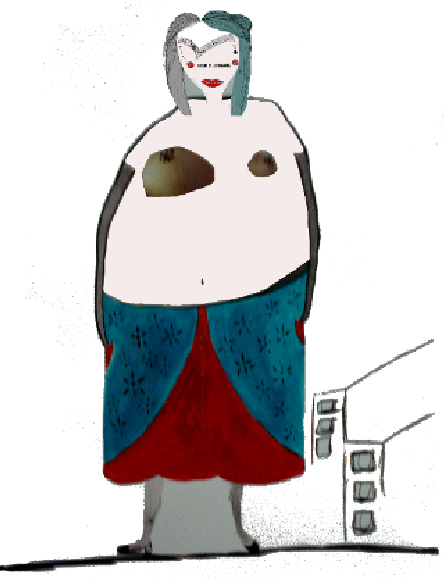

Mutirão Sazonal (MutSaz) de Inverno 2010.
Musa: Pozimi [1].

Esta edição do MutSaz é distribuída em diferentes versões:
verão 2011: dezembro, janeiro, fevereiro.
"Eu sei o que vocês fizeram na primavera passada..." - Tati Prado
 O Mutirão Sazonal de Verão 2010/2011 é inspirado pela Lupercália [14], as festas romanas que "simbolizavam a purificação que devia acontecer ao fim do ano" e que provavelmente deram origem ao Carnaval. Sua musa é Janxs.
O Mutirão Sazonal de Verão 2010/2011 é inspirado pela Lupercália [14], as festas romanas que "simbolizavam a purificação que devia acontecer ao fim do ano" e que provavelmente deram origem ao Carnaval. Sua musa é Janxs.
Palavras-chave: verão, calor, festa, celebração. Cultura digital, autonomia, transição, mudança, criatividade, commons, copyleft, propriedade intelectual, ecad, apocalipse, chuvas, dengue, carnaval, bardos, faunos, fertilidade... (complete aqui).
autorxs: amandawy, bandobailux, bicarato, bruno viera, carrapatoso, caribe, cirdes lopes, dasilvaorg, efeefe, ellen sluis, flavia cremonesi, geert lovink e trebor scholz, greg michener, hdhd, mbraz, paula resende, r4re, siliamoan, tatiprado, vitoriamario.
revisão: mariel zasso
organização: maira begalli
diagramação: yaso
versão navegável e epub: efeefe
todos os textos são livres, com exceção de "Cinco emoções criadas pela internet [18]" original de @leighalexander [19]. o uso e atribuição de "Cinco emoções criadas pela internet" deve se basear na licença concedida originalmente pelo autor.
esta publicação está disponível no Archive.org [20].
---
MutSaz [21] é uma publicação trimestral, colaborativa e improvisada criativamente do MutGamb (Mutirão da Gambiarra), núcleo editoral que nasceu na MetaReciclagem [22].
Para saber mais, criticar, interagir, acesse http://mutgamb.org [23]. Se quiser participar, saiba como aqui [24].
O MutSaz é um projeto voluntário, e doações são sempre bem-vindas [25].
---
por @siliamoan [26]
original em http://rede.metareciclagem.org/blog/03-01-11/Musa-verao-2011 [27]

Verão é composto de conceitos e sentimentos que são difíceis de transpor em palavras.
água gelada, euforia e suor: são três momentos que me remetem boas lembranças de verão.
chuvas de verão, rápidas e que nos fazem sair da rotina de-pouca-roupa também estão ali representando esses momentos.
essa musa (Janxs) é um pouco dura, não é fácil de se derreter, não! é que, sabe como é que é, inicio do ano é preciso dureza para conseguir seguir em frente.
em tempos de colher inspirações em portinari, e nas mulheres que lutam para alcançar seus anseios, objetivos e tudo mais que for de seu direito, é fechado um ciclo.
vem 2011 e seu verão :)
por @dasilvaorg [28]
original em http://rede.metareciclagem.org/wiki/Ressignificar-a-Administracao [29]
A primeira versão deste texto foi publicada num dos meus blogs de experimentações em agosto de 2008. Tudo relacionado à Internet estava em plena ebulição na minha cabeça, e a Interação com a Rede MetaReciclagem apenas se iniciando. Tem muita ingenuidade aí. E certamente mais do que o que consigo ver agora. Mas, de alguma forma, ainda estou muito relacionado a este texto e ele a mim. Por isso retomo essa versão que formatei para a capa do meu site e coloco aqui, no calor desse verão Mutsaz. Pra Janxs, que fecha e que abre.
Há um problema na compreensão geral da administração, tanto da administração (prática) como da Administração (área do conhecimento). Administração é muito mais, mas muito mais mesmo do que tecnologia de gestão empresarial. Porém, as práticas discursivas na área são, compreensivelmente, reducionistas.
Uma esmagadora maioria está preocupada apenas com tecnologia de gestão empresarial (o que não é necessariamente ruim) e chama isto de Administração. Sim, as tecnologias de gestão são uma parte, mas apenas uma parte de um todo, muito, muito, muito mais complexo.
Entenda. O que estou tratando aqui não se resume a diferenciar a natureza da organização ou do processo a ser administrado: Empresa Privada, Organização Pública, ONG, etc Não é isto. Até porque o gerencialismo [30] [PDF] é uma realidade na Administração Pública.
Quero evidenciar que há uma excessiva concentração de interesse e debate em torno de apenas um aspecto da Administração: as tecnologias de gestão empresarial. Esta concentração é tão expressiva que assume, às percepções ingênuas (ou nem tanto), o significado de Administração.
Para quem se preocupa com uma Administração para além da Tecnologia de Gestão, há um efeito colateral desta substituição muito desgastante: estar a todo momento ressignificando* a Administração nas conversas. E aí não só há o trabalho (às vezes muito complicado) de ressignificar a Administração, mas também de transpor essa percepção para uma série de conceitos e noções utilizados na área.
A coisa fica mais complicada quando se analisa a natureza do conhecimento que alimenta as construções discursivas deste viés dominante na Administração. O pop-management [31], como O Monge e o Executivo, não é o pior. O mais grave talvez sejam as abordagens superficiais e às vezes distorcidas do conhecimento formal das Ciências Sociais e outras áreas do conhecimento. Assim, por exemplo, fala-se muito em burocracia mas poucos vão além do senso comum e das sínteses dos livros de Administração.
O excelente artigo de Nicolini [32] (que explica historicamente situação atual dos Bacharelados em Administração no Brasil) apresenta o que eu acredito ser um componente muito importante das causas do problema. Ou seja, cursos fundados e ainda hoje estruturados com base em importação de tecnologia de gestão, distanciamento da pesquisa e educação bancária [33].
Administração é na verdade um conjunto de práticas imanente à vida do homem em sociedade. Lida com planejamento e organização de recursos, com provisionamento, com tomada de decisões para a vida. Em essência é prática política e, sendo assim, não deveria ser olhada e pensada apenas sob a ótica da tecnologia de gestão empresarial.
Por mais importantes que sejam (não podemos negar os méritos da tecnologia de gestão) as partes não podem ser vistas separadamente como o todo da Administração. Sob pena, como nos mostra Capra [34], de reduzirmos a complexidade da humanidade a leis gerais e generalizantes apropriadas da Física e da Biologia para explicar o comportamento social.
Acredito que há mais gente incomodada com esta questão, e mais gente que gostaria de ver a Administração recebendo uma significação mais apropriada. E mais ainda, penso que há gente que gostaria de ver esta siginificação presente nas salas de aula dos cursos de Administração. Uma Administração ressignificada para algo mais integral.
Será a Internet, festejada pelo “poder” das mídias sociais, o meio que permitirá uma ressignificação amplamente conhecida da administração?
por @marcbraz [35]
original em http://article.gmane.org/gmane.politics.organizations.metareciclagem/42017 [36]
antes do subarraial, nas inúmeras conversas, escrevi isso pensando numa escola transdimensional. Ainda rascunho... compartilho:
“Não almeje propriedades, cultive experiências.”(Dpadua Live)
_metazenbudismo_convivencialidade_temporalidade_política_do_compartilhar_tu_eles_vós
Diversidade ao invés de multiplicidade. A serialização induz ao mito da cópia perfeita e inibe a aprendizagem pelos erros. A diversidade reconhece as possibilidades que a convivencialidade proporciona na diferenciação das perspectivas.
Produzir a caminhada do conhecimento agregada aos ciclos temporais e naturais. Coletar junto as comunidades tradicionais e territoriais, as práticas e oralidades ancestrais que permitem a abertura do despertar xamânico. Conectar estas práticas a formas de economia simbólica e solidária que promovam a diversidade cultural do território, criando um ciclo regulador, onde a cultura determine as políticas públicas e não o oposto.
Estabelecer acordos afetivos com os pequenos botões em floração, as crianças e jovens que anseiam uma herança de possibilidades e não uma miríade de problemas sociais por resolver. Estes acordos passam pela mudança da educação serializada para a educação holonômica. Estabelecer o diálogo franco como o parâmetro maior, criando uma rede de conversas entre todos os envolvidos, antes que as decisões e escolhas sejam efetivadas.
Reconhecer(-se), no sentido de reafirmação, das formas não convencionadas de todas as dimensões do conhecimento. Inclua-se nessa relação de termos não-excludentes: a amizade, a intuição, a afeição, o tecnoxamanisno, a meditação, o cultivo da terra, a proteção de todos os animais, a cosmologia indígena, a empatia, a hermenêutica, a percepção gnóstica e toda produção amorosa.
Holística, de Holos, grego, que significa inteiro, não fragmentado. Adjetivo ou substantivo significa uma visão não-fragmentada do real, em que sensação, sentimento, razão e intuição se equilibram, se reforçam e se controlam reciprocamente, permitindo ao homem uma plena consciência, a cada momento, de todos os fatores envolvidos em cada situação ou evento de sua existência, permitindo-lhe tomar a decisão certa, no momento certo, com sabedoria e amor espontâneos, o que implica a presença de valores éticos de respeito à vida sob todas as suas formas. ( Weil,1958)
Reconhecer pela exploração do território, num mapeamento afetivo, como a vida tem sido valorizada ou não, no Arraial d'Ajuda. Como a energia complexa da Teia da Vida se propaga entre os corpos, onde além do princípio do prazer, as construções corpóreas se encaminham para um tempo que é plena celebração.
Entender a cultura como o caldo de três grandes campos: a troca de mensagens pelos códigos tecnológicos e simbólicos (língua/linguagens) disponíveis, a troca de bens materiais e imateriais na forma de bens tangíveis e serviços (a economia solidária) e a troca das utopias desejantes [a (diz)ordem do discurso no espaço social], o bem mais precioso.
Tecer malhas sociais interdependentes que abstraiam o capitalismo como pensamento único e fatalista. Ao sermos interdependentes é que seremos livres. O medo do futuro é o símbolo vazio, na forma de armadilha desejante, que o capitalista vende para que o mito do consumismo e da consumição se propague. A pauta do desejo dever ser reapropriada sob novas perspectivas. Nenhuma forma de vida poderá ser privilegiada em detrimento de outra, o meu desejo não está a venda para engordar o capitalista. O estranhamento na produção autônoma é uma estratégia do capitalismo para qual estaremos preparados e resistiremos.
A música, a dança, os movimentos dos corpos como proposto pelas filosofias orientais também serão formas utilizadas para a exploração do corpo em outros corpos. Exploração nos sentido de um vasto e infinito universo a ser explorado.
Com quantos olhares se constrói uma tese? Alguém ficou ao longo do caminho? Com quantas esquinas e quantos moribundos se constrói uma cidade? Quais perguntas fazer?
Esperteza, Paciência
Lealdade, Teimosia
E mais dia menos dia
A lei da selva vai mudar
Todos juntos somos fortes
Somos flecha e somos arco
Todos nós no mesmo barco
Não há nada pra temer
- Ao meu lado há um amigo
Que é preciso proteger
Todos juntos somos fortes
Não há nada pra temer.
por @efeefe [37]
original em http://rede.metareciclagem.org/blog/13-01-11/Um-tablete-por-crianca [38]
Estava lendo a entrevista do ministro Paulo Bernardo [39] no Estadão [40], e me chamou a atenção a frase que ele atribui à presidenta: "chama os produtores nacionais de computador e faz uma negociação com eles para fornecer tablets com preço mais popular". Acho um movimento interessante, mas é necessário aprofundar um pouco mais a conversa. O problema das iniciativas de governo nessa escala é que elas têm um tempo de implementação totalmente diferente da velocidade de desenvolvimento de tecnologias. O projeto Um Computador por Aluno [41] é um exemplo.
Tudo começou quando o MIT criou o projeto OLPC [42], que propunha um hipotético laptop de cem dólares para crianças de países em desenvolvimento. Eles desenvolveram uma solução de hardware e uma distribuição Linux. O Brasil foi um dos interessados, de onde surgiu o UCA. A minha opinião é que o maior resultado do projeto OLPC foi influenciar a indústria a entender que existia demanda para computadores menores, mais leves, com menos processamento e maior duração de bateria. A primeira a apostar nisso foi a Asus, com a linha EEE. O resultado foi o desenvolvimento de um nicho totalmente novo no mercado, os netbooks. Em pouco tempo, todas as grandes fabricantes (até uma relutante Apple) desenvolveram soluções nessa linha.
Enquanto isso, o programa UCA patina com a licitação de lotes de computadores de uma fabricante nacional onde grande parte da inovação do OLPC foi deixada de lado: nada de manivela para alimentação manual da bateria, nada de distribuição linux desenvolvida com aplicativos educacionais, nada de redes mesh. É o que acontece quando a indústria brasileira de TI (que não cria nada sozinha!) é deixada a cargo do desenvolvimento de produtos: nada de inovação, somente replicação do que é trivial no mercado.
É nesse sentido que acredito que simplesmente negociar para que os produtores nacionais ofereçam tablets mais baratos é perder uma grande oportunidade. Existe uma linha de pensamento limitada que tenta opor computadores e tablets, tratando estes como dispositivos para o mero consumo de mídia (acesso) e os primeiros como máquinas mais adequadas para a criação. Isso só é verdade em um nível superficial, pensando em arquiteturas fechadas e restritivas. Em tempos de possibilidades múltiplas de produção de hardware [43], seria bem interessante que se projetassem dispositivos abertos e genéricos [44] baseados em software livre e protocolos igualmente abertos. Em vez de simples "tablets", podemos pensar em dispositivos inseridos em soluções abrangentes de acesso, processamento, conexão, armazenamento e conectividade. Eu lembro de conversar há alguns anos com Daniel Pádua [45] sobre dados pessoais em telecentros, e imaginamos um cenário em que os telecentros não teriam CPUs - somente teclados, mouses e monitores. As pessoas levariam seus aparelhos com processamento próprio e utilizariam esses periféricos. Depois, poderiam levar os dispositivos para casa, para a escola, para o trabalho. Na época, tínhamos imaginado laptops sem tela, mas hoje em dia (depois da revolução dos smartphones, dos netbooks e do surgimento dos tablets) é possível pensar em uma solução semelhante baseada em tablets genéricos.
Eu testei [46] um modelo específico, o SmartQ V7 [47], da Smart Devices. Ele tem porta USB, saída de vídeo HDMI e slot para cartão SD. Pode ser usado com um monitor, mouse e teclado externos. Roda Android, um sistema operacional baseado em Linux (é possível questionar o quão livre o Android é, mas de toda forma ele é muito mais versátil do que seu principal concorrente atual).

Como o SmartQ, existem hoje algumas dezenas de aparelhos semelhantes, tão ou mais versáteis, como o Touchbook da Always Innovating [48]. Se deixarmos para que as grandes empresas da indústria nacional ofereçam soluções próprias, não duvido que apareçam tablets que se resumem a netbooks com touchscreen e sem teclado, rodando uma versão leve do Windows (não!!). Ou então tablets que tentem reproduzir a ecologia da apple e façam suas próprias lojas proprietárias e fechadas.
O grande problema é: como operacionalizar o desenvolvimento de produtos inovadores em grande escala? Não é papel do governo criar essas soluções. Talvez pensar em uma estrutura modular, em que pequenas equipes criativas desenvolvam soluções para pautar a indústria. Talvez propor que, antes de responder a licitações com especificações e preços, a indústria brasileira entregue estudos de campo e propostas criativas mais abrangentes. Não vamos perder mais uma oportunidade de gerar inovação genuinamente brasileira.
por @bicarato [49]
original em http://www.alfarrabio.org/index.php?itemid=3305 [50]
Lá pelos idos da década de 1980, resolvi fazer um curso técnico de eletrônica – não deu nada certo, como se pode imaginar. Mas, entre os vários colegas da época, estudei com o Jarbas: um magrelo maluco que, logo após o curso, mostrou o quão maluco realmente é – o cara pegou uma bike e foi pro... Alasca! Só isso, claro, já renderia uma puta história, mas...
Anos depois, eis que o encontro *escondido* refugiado lá em Monteiro Lobato (é, o mesmo lugar mágico onde me casei). E, pqp!, não é que só agora descubro outra vertente pra-lá-de-bacana do cara? Eu já sabia que a marcenaria dele é mais do que disputada, mas o cara é um Metarecicleiro de mão-cheia, com *M* maiúsculo, nato mesmo! Segue aí uma reportagem bem fiel ao espírito do – tenho orgulho de dizer – meu amigo Jarbas:
Segundo clichê: Jarbas, sei que tu visita este Alfarrábio de vez em quando. Pronuncie-se, por favor, e pode ter certeza de que tu já tá devidamente convocado a colaborar com a rede... =^)
por Bando Bailux [51]
disponível em http://www.youtube.com/watch?v=ujFkqvZTz3Q [52]
por @vitoriamario [53]
original em http://rede.metareciclagem.org/wiki/APH-no-Recife [54]
@dasilvaorg [28]: "O texto a seguir é um relato sobre a Segunda Jornada do SAMU Metropolitano em Recife, ocorrida agora em novembro de 2010. Foi escrito por um profissional de saúde com alguns anos de experiência no dia-a-dia dos hospitais e plantões de emergência na região metropolitana da cidade. O conteúdo toca no lado negativo da gambiarra, da tecnologia de gestão e da política. Esta é uma colaboração para o Verão 2011 Mutsaz que nos lembra que Janxs [27] possui duas faces."
Depois das apresentações dos militares e do chefe do SAMU em Recife tivemos o primeiro palestrante, gerente geral da SDS (Secretaria de Defesa Social), que apresentou bons slides, com boas animações, tinha domínio da apresentação, sabia se expressar e interagir com o público. Mas logo veio o primeiro deslize: ao afirmar que Pernambuco tinha a polícia mais integrada do Brasil disse que isso se devia ao trabalho da gestão Eduardo. Ora, personificar na pessoa do governador essa integração é demais. Ainda que o palestrante estivesse sendo institucional, não poderia personificar essa situação por razões políticas óbvias.
Obrigações institucionais nunca deveriam ser confundidas com ações midiáticas manipuladoras na pessoa de nenhum gestor, seja ele o governador, seja ele do 3º escalão, porque governar não deveria ter nada com estrelismos midiáticos. Mas sabemos que isto não é verdade, e o que tem de gestor dando entrevista não cabe num fanzine, mas num cabe mesmo (mermo, mermo). E compondo mesas então, não cabe numa Caras (Ainda existe isso? Caras??????????).
Depois do bom início o que se seguiu foi um processo de esvaziamento do conteúdo humano na fala do primeiro palestrante. Quando falou da diminuição significativa da criminalidade no Recife e no número de homicídios, por mais que tenha tentado humanizar seu discurso falando das dores das perdas dos entes pelas famílias, a prática na verdade é outra. As pessoas não passam de números, ou melhor dados, porque são processados num software programado por alguém para dizer que os números expressam evoluções positivas significativas neste ou naquele campo de ação governamental. Não sei onde esse povo vive, mas com certeza não é esse o cenário real. Houve melhorias numas áreas, mas em outras houve pioras e o que é pior, houve uma degeneração na personalidade arquetípica do povão. E isso faz determinadas ações midiáticas e manipuladoras parecerem grandes atuações. Mas claro que terceirizadas e a baixo custo. Basta ver o que se utiliza de reciclagem e mão de obra barata em decorações das datas comemorativas das festas de fim de ano. O que vejo na verdade é que já chegou o tempo das pessoas mudarem a consciência e entenderem que bem mais do que ações bélicas, as melhorias humanas urgem, sobretudo em nível gestor.
Por último o palestrante falou sobre o Backbone (“coluna vertebral”????), um sistema de transmissão digital que faz parte de um diagrama de ações, que por graça divina não era pentagonal. E arrematou mostrando um projeto arquitetônico de um chamado CCR (Centro de Controle e Regulação). Um centro bacana estruturalmente. E ainda que eu eu não entenda nada de arquitetura, aparentava estar bem planejado e pronto pra ser construído, porém ainda incorporando uma personalidade militarista, aquela que separa as autoridades dos outros trabalhadores já induzindo quem estará na gerência e quem estará na execução.
Findada a primeira palestra senti falta de um projeto voltado para os recursos humanos, nenhuma previsão de incremento orçamentário para reajuste salarial de todas as categorias envolvidas e nenhum projeto de normatização que impeça a atuação de “pessoas influentes” (“Otoridades” com vínculos políticos, familiares ou classe social, fundados em princípios da Família, Tradição e Propriedade). Senti que o perfil institucional patriarcal, autoritário e hierárquico militar ainda influencia muito, desde o tempo do discreto charme da burguesia, se perpetua e induz os temidos “Distúrbios Civis” que se tornam o cenário ideal para ações de emergência, que frequentemente requerem muitos recursos financeiros e se transformam num excelente ralo para desvio de dinheiro público.
O segundo palestrante do primeiro dia foi um tenente coronel dos bombeiros do Recife. Rapaz jovem porém seguro. Fez uma ótima exposição e só pecou quando elencou o 11/9 como exemplo de atentado terrorista, porque primeiro que já está provado que o 11/9 foi um ataque de falsa bandeira americana (Veja vídeos como Loose Change [55] por exemplo), depois porque o exemplo de Helsinki, que foi uma Olimpíada, é muito mais ilustrativo. Além do mais, as empresas que industrializaram o entretenimento do futebol são muito mais danosas ao próprio futebol do que um possível atentado terrorista, pra isso as fronteiras e aeroportos junto com a Polícia Federal devem estar estruturadas e preparadas, socorristas têm a ver com os problemas de APH (atenção pré-hospitalar) que surgirem no cenário. Prevenir atentado terrorista é um papel de outra esfera de gestão.
O último palestrante do dia foi o o chefe do SAMU Recife, que falou rapidamente e objetivamente. Pareceu até o terceiro par de Terezinha de Chico Buarque, não trouxe nada e também nada perguntou. Foi rápido, raso e seco.
No segundo dia, cheguei no meio da palestra de um interlocutor que de início parecia ser alguém que realmente se interessava pelas pessoas que necessitam dos serviços de urgência, e portava-se como numa atuação arquetípica de profissional médico. Era um representante do MS que foi mais infeliz que feliz em sua apresentação e nas respostas às perguntas da plateia. Não foi em momento algum brilhante como saudou o cerimonial da jornada ao final de sua apresentação na tentativa de fazer um “APHzinho”(APH = Atenção Pré-Hospitalar) para o gestor, num claro uso de suporte básico, só para melhorar o ar de autossuficiência que externava na mais patética apresentação militarista quando deveria ser humanista, o que só sublinhou a péssima qualidade do exposto e das resposta aos questionamentos dos participantes.
O representando do MS foi na verdade extremamente infeliz, usou um vídeo do GATE (Grupo de Atividades Táticas Especializada), tropa de elite da PM de São Paulo, pra referenciar a coragem e atitude de um grupo que quer atuar em momentos onde o espírito de grupo é fundamental. Certo, isso foi entendido, mas o que ninguém entendeu foi por que usar o GATE? Havia muito bons exemplos além deste, como por exemplo os Anjos do Asfalto de São Paulo, que exemplifica muito melhor tal premissa em ser corajoso, atencioso, acolhedor, com a atitude técnica esperada para o momento. Todo profissional envolvido em APH tem consciência disso, não me venha um gestor, que trabalha na cartilha da redução de despesas e execuções a baixo custo, me falar que precisamos ter melhor e maior empenho. Porque isso significa trabalhar mais, com uma demanda cada vez mais excruciante, ganhando pouco e sendo gerenciado por repetidores de ordens que, ao invés de investirem em recursos humanos e insumos para o trabalho, terceirizam ao mais baixo possível custo e nos relegam à situações que só sabe é quem experimenta o dia a dia.
O que precisamos na verdade são melhores cursos formadores dos recursos humanos e educação continuada de alta qualidade, que devem ser proporcionadas à todos e não somente aos mais achegados ao núcleo gerencial. Esta educação continuada deve ser avaliada periodicamente por Instituições como Universidades Federais e sem a mínima possibilidade de apadrinhamento, seja de cunho político, familiar ou afetivo, muito menos prostituído.
O que precisamos e queremos ver são gestores que veem e enxergam os profissionais, que valorizam e se corresponsabilizam com as nossas ações e fragilidades, que em geral são enviesadas com necessidades não supridas pela esfera gerencial, e não este “Pai Patrão” que só nos impinge desconfianças e cobranças, não nos ouve e mal nos vê. Claro, não podemos generalizar totalmente, mas há uma preponderância deste tipo gerencial.
O que deveria ser discutido eram melhores materiais e insumos, viaturas e melhores salários pra todas as categorias envolvidas, mas disso ninguém ouviu sequer rumores. E ademais, por mais organizado e asseado que pareça o meio militar (e estes são pilares positivos das instituições militares), os pilares negativos do Autoritarismo e Hierarquização parecem ser o dia-a-dia dos quartéis mundo afora. Sem falar que vez por outra um Coronel tem uma empresa ou é acionista majoritário de uma Indústria, como o ex-chefe da guerra contra o Iraque Cel. Donald Rumsfeld, e se utiliza dessas guerras pra auferir “Profitys”, lucros, em meio a dor e ao sofrimento de uma nação invadida, dominada e arrasada.
Os Políticos, os governos, os Rotschild, os Rockffellers, as famílias Reais mundo afora não se importam com as ditas pessoas comuns, eles as exterminam e as escravizam e podem facilmente colocar a responsabilidade em catástrofes naturais, em surtos epidêmicos e conflitos armados, espalhando dor, fome, desespero e miséria. A gente tem que se ligar e procurar se informar sobre a Agenda Esotérica, sobre o Codex Alimentarius e a Agenda 21. São essas as peças doutrinárias principais de pessoas que ocupam cargos comissionados em geral, que só vivem maquinando as formas de reduzir os custos dos seus subordinados, nem que para isso custe a vida dos nossos pais e/ ou filhos,por exemplo. E somos nós que os escolhemos, mas não escolhemos todos os outros cargos, alguns muito importantes, mas que são relegados ao 2º escalão justamente para sair do foco, porém, em geral, são os que comandam.
Então, para o representante do MS, aquele modelo militarista parecia inspirar. Foi o que deixou claro, além disso, fez umas críticas ao próprio governo para quem trabalha, foi quando pareceu mais sensato, reclamou da falta de dedicação dos profissionais socorristas, e se entregou por três vezes, quando disse que: 1º) Viajava muito... Só que isso nós já sabíamos, (e também sabemos de diárias e de vinhos caríssimos nos jantares de muitos gestores Brasil afora); 2º) quando disse que ia relaxar num plantão, imaginem relaxar num plantão desses de final de semana na grande Recife. Gostaria de convidá-lo a se divertir. E quando declarou que faria um ACLS por puro modismo nesse mesmo final de semana, além de despreparo para o cargo no MS, demonstrou claramente que tem afãs militaristas e com a postura de Médico que tem, deveria estar se preparando, para depois de sair do MS entrar numa Corporação de Corpo de Bombeiros e daí dar vazão as suas vontades militares. E ingressar como convidado numa dessas Universidades Particulares no curso de Medicina, para realizar seu sonho de ser Médico.
Cobrar empenho de socorristas e equipes do SAMU é o mesmo que proferir a falácia da obviedade, pois a maioria das pessoas que trabalham em equipes do SAMU são abnegadas e entregues aos seus serviços. Serviço mesmo de verdade, que com certeza não é ficar sentado atrás de birô despachando, nem andar de motorista ou de avião do Oiapoque ao Chuí dizendo que estão trabalhando muito, estando na realidade em reuniões e decidindo as suas ações através de estatísticas e critérios políticos, mas nunca através de uma partilha colegiada de necessidades negociadas e colegiadas.
Dizer que vai relaxar num Plantão é um disparate que beira o humor circense, porque ou esse plantão é uma mamata ou ele não sabe o que é um plantão brabo de Zona Metropolitana no Recife. E se conhece a realidade foi infinitamente infeliz uma vez que o sentimento de quem realmente trabalha num plantão de SAMU ou de urgência e emergência num grande centro deste país não partilha nenhum sentimento de diversão, a não ser que esteja regredido ou tenha aquele velho olhar burguês de que se num é com os meus, é tudo muito engraçado. Há palhaços e palhaços, é fato! Mas a realidade do APH (Atendimento Pré-Hospitalar) numa Zona Metropolitana de cidade grande nada tem de engraçado ou desestressante.
Ao final da apresentação deste representante do MS duas pessoas fizeram perguntas. Primeiro um bombeiro da Bahia, que falou do estado deplorável das Ambulâncias e viaturas do corpo de bombeiros da Bahia e da falta de material de trabalho, havendo inclusive casos de mangueiras de incêndio que se rompem ao serem usadas. Questão de falta de manutenção e substituição ao acabar a vida útil do material. Disse também que as ambulâncias andavam amarradas com arames, as tão conhecidas gambiarras, que nada mais significam que um caminho mais curto, ridículo e barato, o caminho do lobo, muito utilizado por gestões estapafúrdias e patéticas. O colega da Bahia provou com a sua intervenção a coragem, a atitude e a disposição de socorristas que apesar de mal equipados e com viaturas aos pedaços conseguem desenvolver um trabalho digno. Mas o palestrante de pronto afirmou que estava a par e que coincidentemente havia estado com o governador de lá na semana anterior à Jornada e que estes problemas já estavam em vias de resolução. Pelo menos foi essa a impressão que ele quis dar. Soou como uso de Mertiolate para APH e não satisfez o conteúdo do argumento, pelo simples fato de não ser Mertiolate padrão de APH em nenhum lugar do mundo.
Depois foi a vez uma moça educada, que com muito cuidado, sem atacar em nenhum momento o representante do MS, fez dois questionamentos, tendo o cuidado de se apresentar antes. Salvo engano, perguntou qual a opinião do mesmo em relação aos Paramédicos Americanos/Canadenses e de se o mesmo tinha conhecimento de cursos de socorrista com 700h e até 1600h de formação. Foi a partir daí que o palestrante degringolou. Começou logo a se defender e fazer uma piada de improviso quanto a questão dos paramédicos, de muito mal gosto e de uma complexidade tipo Zorra Total, e ainda se utilizou de sua autoridade para atacar a interlocutora, quando ao perguntar se os cursos nos quais ela ensinava eram credenciados pelo MEC, numa desesperada atitude de quem se mostra despreparado para estar no cargo que ocupa, o que não é nenhuma novidade para qualquer ser senciente com alguma vivência em Urgência e Emergência em Unidades SUS Brasil a dentro, e quanto mais dentro pior, todos sabem. Pois se não estivessem credenciados, se preparassem, que eles estavam chegando para avaliá-las... Pairou a ameaça no ar... Muitas pessoas não entenderam nada.
Digo que não fazem mais que sua obrigação em fiscalizar e avaliar os cursos de formação. Mas que procedam de maneira limpa, e não somente credenciando a partir do escopo político, nepotista e tradicional que ainda hoje vigora, apesar de estarmos em uma gestão dita popular (eu digo populista, outros amigos me dizem populosa). Enfim, nosso representante do MS nem respondeu e ainda falou que tem cursos de 300h sendo ultra eficazes. Epa! Peraí, não era ele quem iria endurecer contra os cursos? De repente cursos ultra-rápidos viraram opção? Depende de quanto vai sobrar da terceirização do serviço, né? Isso sim!
Depois, atacou a sua própria classe (enfermeiros), aprofundando uma ferida aparentemente resolvida, mas que sempre existiu no nível subjetivo. Profissionais resolvidos sabem o que fazem por dedicação e por estarem amadurecidos em escolher os seus caminhos, porém essa não pareceu ser certamente, uma qualidade desse Senhor, que afirmou aos enfermeiros da plateia, num total desrespeito com a classe e sem autorização expressa nenhuma da classe médica ou dos médicos ali presentes, que quem quisesse fazer procedimento médico fosse fazer medicina, remetendo também a outro nó crítico que é a CBHPM (Classificação Brasileira Hierarquizada de Procedimentos Médicos), uma briga que é muito mais mercantil que humanista. Até falar isso muitas pessoas, inclusive eu, achavam que nosso palestrante era médico, mas qual não foi a surpresa e expressão de surpresa total quando ele se entregou pela última vez, se dizendo enfermeiro. Nessa hora eu pensei em me levantar, pegar o microfone e falar um monte(“tchi”), mas tive que conter o espírito de agressão que me tomou naquele momento, e isso eu devo ao meu mestre Sensei que nos ensina os preceitos na Arte e que estes se levam para a Vida, é o caminho. Ou seja, nem respondeu a moça, ou respondeu muito desconexamente num desespero típico de políticos que quando se sentem ameaçados atiram pra qualquer lado, atirou mal contra os amigos e contra o próprio pé e foi socorrido com um elogio de que teria sido brilhante na sua apresentação. O que ficou foi uma péssima impressão, não só para os profissionais de APH, para todos os presentes.
Nosso palestrante concluiu fazendo um jogo de quem é tipicamente “Border–line”: atira no cão pra pegar no diabo e deixa aquela sensação de que o autoritarismo, a violência das palavras e das atitudes, e o desespero de quem não sabe onde está são típicos nestas gestões. O que não é nenhuma novidade, o problema é que certas armas são quase sempre eficazes e provocam uma implosão e um silêncio posterior que evocam temores, mas não em mim. Foi odiosa e de péssima qualidade a apresentação e o posicionamento do gestor. Ficou claro, algum enfermeiro ou médico não vendido duvida disto? Eu não, e tenho certeza que a enfermeira e educadora em APH também não. Ele simplesmente teve o desplante de fazer uma piada mais ou menos assim: … “Paramédico no Brasil só vai existir assim: a pessoa vai ficar esperando um médico no meio do caminho e pára ele no seu trajeto”. Pronto, isso foi a resposta dele, ou seja, segundo esse Profeta do APH, só dessa forma existiria Paramédicos no Brasil. Parece engraçado, contudo é revestido de uma repelência e uma virulência tão visível que fica aquele sentimento de “toco” de basquete na atmosfera.
Mas, como já se tornou célebre a frase, em nosso tempo tudo que é sólido se desmancha no ar. Pois foi isso que aconteceu, algo que aparentava ser sólido de repente “ploft”, desintegrou-se em nada, um vazio espacial tão agônico que só nos restam duas opções nesta situação: ou os verdadeiros guerreiros do APH se estruturam e se colegiam ou continuaremos subordinados a estes comissionados gerentes que obedecem a uma ordem política, terceirizam serviços e oferecem serviços mistos onde a redução de custos é a principal diretriz, não importando quantas vidas sejam ceifadas por conta destas contenções de despesas. E não houve nada a acrescentar no 3º dia....Nem nada brilhante... pelo contrário!
por Flavia Cremonesi [56]
original em http://penacultura.blogspot.com/2011/01/invasao-das-mulheres-sem-nome.html [57]
Estava dentro de um carro num estacionamento esperando meu amigo André quando ouvi os primeiros prenúncios do temporal, olhei para céu e confirmei apertada que a água despencaria de lá das plumas com força total.
Estava dentro do carro e assim permaneci quando a chuva torrencial executou sua dança de raios, trovões, ventanias, granizos e água, muita água, numa orquestra composta de sonoridades e imagens que vão além de suas intensidades.
Me permiti a ignição do possante quando me vi ameaçada por um holofote que balançava ao meu lado como se fosse bambu... pensei: ¨esse troço vai cair em cima de mim!¨ Então rodopiei as quatro rodas em direção do nada que conseguia ver... mas saí daquele local apavorante e parei novamente para esperar que ao menos aquele espetáculo passasse a encenar seus últimos números...
Na minha caixola, um áudio no modo repeat dizia: Putz... com certeza a casa encheu... afinal com bem menos água, 4 dias antes, eu já tive que me dedicar às tarefas do lar... mais conhecido pelas mulheres em geral como lerê!
Deu a hora de tentar sair daquele palco e procurar outras arenas...
Para chegar em casa, algo em torno de 1km de onde eu estava, tive rodar uns 5km para chegar ao destino... Eu e meu amigo André nos aventuramos entrando em tudo o que foi contramão para fugir de tantos alagamentos da querida Santa Terezinha; mais parecia um game, íamos passando de fase... rsrsrsrs
E o áudio na cabeça a cantarolar o prelúdio do que já era...
Depois de largar o quatro rodas na casa do amigo, segui aperreada rumo à minha casa, tentando ser otimista, como se isso me liberasse do pior...
Na rua atrás da minha, o rio fez jus a sua força e sabedoria, expandindo suas margens e tomando conta de tudo ao seu redor, e como quem anda em corda bamba, lá estava eu me equilibrando no murinho do rio, para não cair em nenhum dos lados dele, afinal tudo já era um.
Depois do desafio de não cair e ser levada downstream, olho e vejo a muvuca na esquina de casa, todos olhavam para o alto e não era para menos, a cobertura nova da vizinha tinha se desmembrado de sua casa e ganhou asas, parando somente nas correntes elétricas da eletropaulo... parecia mais uma instalação de arte – não para aqueles que perderam sua telhas, caibros e tals... of course!
Entrei na minha rua e o lerê era geral, vizinhas lavando suas casas era o sinal que faltava (porque eu não queria ver o fato, mesmo com tudo o que já havia presenciado até então...) de que a água mais uma vez adentrou meu ninho... não que a água seja mal vinda em casa... é que água de esgoto definitivamente não é algo legal de se ter em lugar algum, quanto mais na tua casa. :(
Mas me dói profundamente chamar um rio de esgoto, mas é o que é, por enquanto....
Um dos meninos da rua, ao me ver aproximando de minha casa perguntou: ¨Quer ajuda?¨
E eu: ¨Para quê?¨
Ele: ¨Para tirar a água da sua casa¨.
E eu, numa manifestação mais que petulante e incrédula respondi: ¨Não precisa, estou acostumada, grata!¨ … mal sabia o que me esperava... kkkkkk
Abri a porta e mergulhei minha perna na piscina barrenta, nunca tinha vista nada igual!!
Água até o joelho em todos os cômodos... coisas a boiar e gatos ilhados, pobres coitados – assustadíssimos!
Antes de processar aquelas informações todas e movida pelo instinto – salvar bichos!, destinando-os ao segundo andar... depois, um olhar panorâmico no tamanho do estrago e um momento de choque onde possivelmente as sinapses entram em colapso...
Me dirigi a porta da rua abrindo-a para ver se conseguia enxergar algo além daquela água turva e de repente quem sabe, atinar a resposta, o feedback, buscar a saída daquilo... se bem que a vontade mesmooo, era de sair andando, passo a passo até, quem sabe, esquecer quem era eu... mas meu ascendente, bem representado por sua natureza terra, me puxou da água (literalmente) com o comando ¨Deixa pra chorar depois e bora que tem é coisa pra fazer!¨
Firma o pé mulher!!! rsrsrsrs
Nesse instante, algo de surpreendente sucedeu: sete mulheres sem nome, invadiram minha casa, sem ao menos pedir licença ou questionar se precisava de ajuda! Simplesmente adentraram munidas de baldes, coragem, força, calças arregaçadas e passaram a tirar a água de minha casa incessantemente!
Leptospirose, que nada – bora drenar essa aguaceira toda!
Eu, parei!
Devo ter ficado em choque por uns 30 segundos olhando aquela cena e refletindo rapidamente sobre ela. O que mais me martelava a cachola de marfim recheada de correntes elétricas e neurônios era: ¨Não sei o nome de ninguém!”
Fantástico!
Recobrei a memória de mim naquele espaço surreal da minha vida e cacei um balde para me juntar às mulheres sem nomes!
Após esvaziar o rio que era minha casa, a missão era lavar tudo e pude contar com a ajuda do amigo André e sua super animada e disposta prima – Patrícia, munida de seu filho fofo!
Desinfectar chãos e paredes para que no próximo dia pudesse iniciar a limpeza das coisas e verificar o prejuízo... para um biólogo, visualizar (imaginar) a proliferação das bactérias é o mesmo que ver um prato suculento de pasta ao pesto para um aficionado em massas faminto... eu tinha mais do que certeza de que elas ali estavam!, e mais, crescendo indefinidamente!
O detalhe de tudo isso era que por conta do temporal, havia acabado a energia elétrica e a água... só para facilitar, é claro...
Dá para imaginar essa história toda acontecendo a luz de velas?, pois é... foi assim!
Ao deitar na minha cama, me permiti derrubar 3 lágrimas, mesmo com um rio turbulento dentro de mim e me ative em recordar as mulheres sem nomes, que me ensinaram a receber solidariedade sem pedir e que me mostraram o que significa essência na prática!
Olhar para elas me reanimou – recordar que há uma essência bela em cada ser, independente de qualquer coisa que seja!, gratidão poder ver!
Renovação da fé no ser humano, ufa!
Quanto ao rio, aquele dentro de mim, ainda veio a transbordar mais tarde, no outro dia, quando constei que todos meus mantimentos haviam se contaminado com a água, jogar toda aquela comida fora foi a tarefa mais difícil e dolorida de todas, aquilo tinha um quê de sagrado para mim e foi por isso que chorei, porém sem me esquecer das mulheres sem nomes!
por Tati Prado [58] e Ellen Sluis [59]
original em http://rede.metareciclagem.org/blog/23-02-11/Ponte-eterea-Santarem-Holanda [60]
No piquenique no Parque do Ibirapuera, no encontrinho do Mutsaz Outono [61] do ano passado, conheci a Ellen. Vinda da Holanda, já tinha dado uma boa volta por essas terras e conhecido a Casa Puraqué [62], no Pará.
A minha curiosidade e a vontade de ir a Santarém pra olhar com mais calma o que rola por lá já tinha sido despertada no ano retrasado, durante o Encontrão Metarecicleiro na Campus Party [63], com o breve olá do Gama. Na falta de uma oportunidade concreta de ver tudo bem de perto, aproveitei a experiência da Ellen pra reavivar o gostinho de mistério.
Conversas outras rolaram e nunca passaram perto daí, até que resolvi retomar o texto que ela havia publicado em inglês no mutsaz. Achei que traduzi-lo e juntar com algum depoimento ou imagem dos puraque@anos seria bacana. Faria uma pequena costura de lugares, vontades, universos e ações aparentemente desconectados. Um desses encontros bem desencontrados, tão comuns no universo metarecicleiro e sua multiplicidade de hyperlinks e nexos pouco evidentes.
Enquanto espero pelas vozes e olhares puraqueanos, fico com o da gentil visitante:
Na metade da minha pesquisa sobre apropriação de tecnologia alternativa em Santarém, Pará, eu percebi que de fato algo mudou aqui. No decorrer dos últimos oito anos, redes de ativistas sociais se expandiram pela cidade. Conduzidos principalmente por um grupo de ativistas midiáticos, estas visam à apropriação de tecnologia alternativa e construção da cidadania por toda a região amazônica.
O catalisador por trás disso tudo é o Puraqué. O puraqué é um peixe que vive no rio Amazonas e causa um choque elétrico quando tocado. Eles adotam este nome uma vez que pretendem despertar as pessoas por meio de um choque de conhecimento
Seu principal objetivo é a transformação através da apropriação de tecnologia alternativa. Cerca de oito anos atrás, quando começaram seu projeto, foram os primeiros que trouxeram software livre para a cidade. Para eles, o aprofundamento e um metaconhecimento da tecnologia possibilita aos novos usuários fazer algo concreto com a tecnologia.
"Nós queremos contaminar pessoas com o “vírus da Cultura Digital” e com a filosofia do software livre, porque durante a revolução do conhecimento o computador se tornou a ferramenta básica que concentra todos os meios de produção multimídia. Além disso, o computador é uma ferramenta incrivelmente poderosa para o aprendizado, comunicação, troca de ideias e para compartilhar informações. As pessoas precisam entender que de outra maneira nossa sociedade nunca se desenvolverá do modo como queremos. O que nós devemos destacar aqui é que enquanto estivermos submetidos ao processo predatório (mineração, desmatamento, soja) traremos mais e mais miséria para nossa região." (entrevista com Dennie na revista A Rede) [64]
Eles estão cansados de ser explorados pelos recursos que a área contém e querem que o conhecimento se torne a principal característica da região. Conhecimento em tecnologia, mas também a filosofia do software livre numa sociedade capitalista e a consciência sobre os danos ambientais que o lixo eletrônico causa. Portanto, por meio da “contaminação” e educação dos outros, o conhecimento aumentará exponencialmente por toda a região.
Uma das coisas que eu descobri e que me interessa particularmente é como eles se mantêm sem qualquer renda significativa. Todos trabalham voluntariamente e dependem das doações de equipamentos usados feitas por empresas ou pelo governos para continuar seus projetos. O que significa que a falta de recursos dificultaria as atividades. Logo, eles oferecem (frequentemente como voluntários) workshops e cursos e aplicam sua metodologia em escolas públicas com salas de informática (nem todas têm tais laboratórios) e nos Infocentros (centros computacionais implementados e financiados pelo Navega Pará [65], um projeto do governo estadual do Pará). Deste modo, eles recorrem a projetos top-down que são sustentáveis (especialmente em escolas públicas, já que as eleições podem colocar em risco a existência destes projetos) e as hackeam para fazê-las adotar sua metodologia e ideologia, consequentemente passando-as aos seus alunos.
Isto explica por que os Infocentros de Santarém trabalham de forma diferente, por exemplo, da capital Belém. Os puraquean@s me asseguraram que eles já treinaram mais de três mil pessoas nos últimos oito anos. Nos dois últimos anos, a equipe consistiu de aproximadamente cinquenta pessoas. Recentemente o grupo central do Puraqué encontrou trabalhos na área de TIC para todos eles, a maioria como monitores nos Infocentros. Obviamente estas pessoas têm um conhecimento aprofundado em tecnologia, uma vez que aprenderam princípios de programação usando software livre, tendo feito muita MetaReciclagem e passado por um intensivo processo de aprendizagem. Diferente do Belém, em Santarém os monitores ensinam aos usuários dos Infocentros os princípios básicos de tecnologia open source por meio de um curso básico de informática e um diálogo socio-político sobre tecnologia. Hoje, vários monitores dos Infocentros in Santarém estão planejando oferecer um curso de informática avançado também. Isto significa que quem quiser pode levar seu conhecimento além de usar Orkut e MSN.
Em vez de visitar os Infocentros para o uso livre dos computadores e Internet, é preferível ter um curso básico. Durante algumas aulas de informática básica para crianças e idosos, eu me dei conta de como é importante ter um pouco de conhecimento sobre como usar as TICs, como funcionam e em quê usá-las. Especialmente para aqueles que são tímidos, inseguros e têm medo da tecnologia. Isto é, são frequentes os casos de mulheres mais velhas, pessoas que permanecem encarando suas telas sem fazer nada, já que muitas vezes costumam não tocar ou fazer qualquer coisa sem permissão. Elas temem fazer coisas erradas ou danificar o equipamento. Ou ainda elas têm medo de tecnologia em geral, pois não sabem como lidar com isso. Isto significa que, sem um curso, elas não entrariam num Infocentro ou cybercafé, porque, primeiro, elas não sabem como usar a tecnologia, e, segundo, elas não sabem em quê utilizá-la. Elas não têm ideia do que fazer com algo que parece tão natural para nós, como por exemplo o Google Talk. Elas me perguntaram quando mostrei como usá-lo: “Mas o que eu devo dizer?” ou “Devo ser formal ou mais informal?”, até mesmo quando elas batiam papo com seus colegas de curso.
Além disso, muitos dos professores de outras iniciativas de inclusão digital, como Casa Brasil [66] e o Pontão de Cultura Digital Tapajós [67] – projetos do Ministério da Cultura [68] sediados em várias cidades do país – se juntaram ao Puraqué e são treinados por ele. Portanto, o Puraqué garante um emprego e um salário para estas pessoas quanto à expansão de sua ideologia e metodologia através da região. Cada vez que um novo curso começa, a primeira aula explicará detalhadamente porque e como usar software livre. Somente após as primeiras aulas introduzindo a filosofia do software livre, eles começam a aprender como usá-la de fato. Aqueles que não estão interessados nesta história e querem apenas usar a Internet não continuarão o curso. Isto significa que aqueles que eventualmente ficarem e concluírem o curso, abraçam a filosofia e, portanto, estão mais propensos a difundi-la. Portanto, o que é sustentável não é tanto o projeto atual, mas sua metodologia que se expande cada vez mais na região.
Concluindo: o que me impressiona mais até agora é que, na verdade, as pessoas passam por uma transformação social. Não porque experimentam o acesso às TICs, mas porque aprendem sobre ela e seu uso as estimula a perseguir seus sonhos ou, simplesmente, ter sonhos. Isto porque as ações focam principalmente os grupos marginalizados, muitas das crianças vivem em situação de pobreza e elas não são encorajadas a continuar estudando depois do ensino médio, o trabalho físico desgastante ainda é frequentemente mais valorizado que uma carreira em TICs. É esperado que as meninas casem cedo e tenham uma família. Muitas não terminam o ensino médio porque engravidam e muitos garotos acabam em gangues e no tráfico de drogas. É claro que não escolhem essa vida e os cursos no Puraqué permitem que eles percebam que podem fazer algo de fato, que eles têm talentos, que conhecimento é valioso e que podem usar a tecnologia de forma profissional. Isto resulta em muitos dos novos puraquean@s estudando na universidade federal e estadual, em muitas das vezes em áreas relacionadas a TI. Entretanto, a melhor prova e o efeito deste conhecimento e conscientização é a diferença que eu percebi na autoestima entre pessoas que estiveram envolvidas neste projeto e as que não estiveram, especialmente quando converso com vários santarenhos sobre suas experiências. Uma ex-puraqueana me contou que não conversaria comigo antes de começar a frequentar o Puraqué, pois sentiria uma grande distância entre mim e ela, por ser tão tímida. Ao passo que aqueles que não têm uma experiência como esta, permanecem vivendo na ignorância e aceitando a desigualdade social porque não têm meios para resistir. Ex-puraquean@s agora são pessoas (às vezes muito jovens) que sabem o que querem, são autoconfiantes e desejam aprender mais. Pessoas que de fato perceberam que têm potencial.
por Geert Lovink [69] e Trebor Scholz [70]. Traduzido e adaptado por Rafael Reinehr [71] para a Coolmeia [72]
original em http://coolmeia.org/bemcomum/document/colaboracao-em-cima-do-muro [73]
A vida desabrocha com colaboração. Você pode fugir dela, mas não pode evitá-la. Ela lhe acompanha. A química entre vocês a coloca em movimento. O ciclo continua. E após um intenso período do coração, as coisas retornam ao normal. A novidade evanesce. Existe um descanso, uma perda de interesse. Uma amizade emerge. O trabalho está feito. Você segue adiante e esquece dos comuns ruídos de comunicação, das brigas, das egotrips desrespeitosas, ou pior: dos silêncios beligerantes.
Neste livro nós refletimos a dinâmica da colaboração (online). Nós não podemos meramente exaltá-lo como se fosse um produto - ou desconstruí-lo como se fosse mais uma ideologia (que ele é). O que estamos buscando não é nada menos ambicioso do que leis, mecanismos subjacentes, experiências comuns que podem ser cozinhadas e reduzidas a memes, recomendações e ditados fortes e perenes, que continuarão conosco por anos à frente. Nós propomos um laboratório de pensamento e experimentação para as futuras formas de colaboração! Nós não fazemos coro aos analistas de negócios que buscam na colaboração uma ferramenta para enriquecer aos que já são ricos! Nós de forma pungente damos suporte a atividades culturais auto-organizadas bem como ao uso de tecnologias de cooperação. O problema com este tópico é que até agora aprendemos tão pouco no que diz respeito a interações sociais avançadas. O conhecimento da colaboração não é de tipo passivo, um que você possa adquirir e então aplicar. A questão não é: como eu me encaixo? Nós somos apenas humanos uma vez, e estamos destinados a falhar. A despeito disso, com um gosto pela auto-reflexão podemos evoluir. Com a ascensão do individualismo, a colaboração se torna cada vez mais algo que percebemos como “voluntário”, quase como um artigo de comércio que podemos comprar. Uns podem presenciar uma curiosidade crescente, como se fosse um ritual esquecido, antigo, ou uma experiência exótica. “Colaboração? Parece interessante. Posso testar? Por favor faça – estamos oferecendo 30 dias grátis para provar”.
Um aspecto que chamou nossa atenção foi a parcial falta de – e o desejo de – participação. Projetos cooperativos são cada vez mais investigados como uma forma de motivar os muitos online a contribuírem. A questão aqui é distinguir entre um trabalho de equipe de cima para baixo em um escritório e sua retórica de gerenciamento. Nesse contexto, Christopher Spehr lança seu conceito de “livre cooperação”. "Por favor esvazie seu cinzeiro no lixo – obrigado por sua cooperação" não é "livre cooperação". É um fascismo amigável, como Bertram Gross o colocou. Entre "livre e independente" e "forçado" existe uma crescente zona cinzenta de projetos, aplicações e práticas que não focam em ganhos de produção. E elas não são totalmente autônomas e renegadas. Não existe uma "inocência completamente branquinha". Todos temos sujeira institucional sob nossas unhas. Não existe autonomia total em projetos colaborativos. Trabalhar em conjunto não nos exime de cumplicidade sistêmica. A ganância, inimigo auto-engrandecedor, está dentro de cada um de nós. A conferência da Livre Cooperação, organizada em Buffalo em abril de 2004, coloca estes problemas controversos na mesa.
No crescente hype da colaboração, a "economia alternativa" é sub-examinada até agora. Se nós sabemos que podemos conseguir um software, música ou livro gratuitamente através de nossa rede social, porque iríamos nos incomodar em comprar? Por que pagar pela Enciclopédia Britânica se a Wikipedia é uma oferta comparável e ainda por cima gratuita? Estamos dispostos a viver com (e trabalhar nos) muitos problemas desta enciclopédia gratuita. Nós não deixamos cair lágrimas por aqueles editores anglo-saxões brancos e protestantes fumadores de cachimbo da Britânica! Até que extensão os repositórios de conteúdo criado coletivamente podem desafiar ou se equiparar à hegemonia do conteúdo das instituições tradicionais? Howard Rheingold descreve como coletivos de conhecimento caçam e coletam informação. Essas colaborações acumulativas inspiram. Elas também incitam os tubarões corporativos que querem afundar seus dentes em todos estes silos de conteúdo centralizados criados pelos usuários. Eles também amam toda aquela criatividade distribuída, todos aqueles geeks que deixam traços de suas ideias em blogs e wikis. O maior questão sobre essas práticas é o fato de que quantidades massivas de conhecimento é movido para o "comum não regulado" (Benkler). Aqui ele está livre e disponível a aqueles que tem uma conexão à internet, e a literacia online necessária. Aqui, estes arquivos vivem em um solo diferente. Em sua maior parte, eles podem ser modificados ou criativamente aprimorados. Frequentemente este conteúdo não pode ser transformado em bem de consumo. Mas se essas licenças realmente irão permanecer legais ainda estamos para ver. As questões de propriedade sobre práticas colaborativas em relação a bens comuns são muito importantes. São uma questão mais complexa do que o esquema tradicional de um autor vendendo ao Sistema. Nós poderíamos, por exemplo, afirmar que é o Google Incorporated que suga o lucro de milhares de wikipedianos não-pagos. Igualmente pode se dizer que os coordenadores de desenvolvedores de softwares livres são transformados em figuras financeiramente dependentes dos jovens czares do Google.
O Capitalista de risco David Hornik, enquanto estudava planos de negócios de incontáveis pequenas empresas da assim chamada "Cauda Longa", conclui que não existe dinheiro a ser feito com conteúdo na Internet. Desistam de suas esperanças, todos vocês que entraram aqui. Durante o período da corrida do ouro do oeste americano, não foram os garimpeiros de cabeça áspera que fizeram dinheiro. Existiam poucas pepitas do precioso metal dourado para serem encontradas. O dinheiro chegou a aqueles que serviram cerveja e alimentaram os garimpeiros. Na Internet de hoje não são os criadores do conteúdo que ganham o dinheiro. Os prospectos financeiros estão em agregadores e filtros. Escutem a análise de David Hornik:
"Os agregadores são aqueles negócios na web que buscam coletar tanto conteúdo da Cauda Longa quanto possível, de modo a fazer com que suas "lojas" sejam uma parada única para o conteúdo não importa quão popular ou obscuro. O valor para os consumidores desses agregadores de conteúdo é que eles não precisam parar em dúzias de lugares na web de forma a adquirir um conjunto diverso de conteúdo. Como resultado, agregadores são aptos a extrair uma quantidade desproporcional de valor pela venda de cada pedaço individual de conteúdo. E enquanto os criadores provavelmente estão predispostos a vender um pouco mais de conteúdo como resultado da facilidade de venda, eles provavelmente não irão emergir da obscuridade da Cauda meramente porque foram colocados à disposição para venda no Amazon ou iTunes. Os filtros são aqueles negócios que tornam mais fácil encontrar conteúdo que nós achamos interessante, apesar da grande proliferação de criadores de conteúdo, hospedeiros, agregadores, etc. A forma mais pura de um filtro é a ferramenta de busca. Mas quanto mais obscuro um conteúdo, mais inefetiva a ferramenta de busca generalizada será. Enquanto diferentes tecnologias de filtro podem fazer com que o usuário final encontre sua forma de achar um pedaço de conteúdo obscuro, ela provavelmente não será suficiente para catapultar um artista ao mainstream. Os beneficiários do filtro são o usuário final e o próprio filtro, não o conteúdo em si.
"Amadorização em massa", como promovida por Lawrence Lessig, Joi Ito e incontáveis outros cyberlibertários, é uma ideologia poderosa que agrada a um amplo espectro de pessoas. É um meme que foi desenhado para dar um volta positiva no quadro depressivo que Hornik pintou. Os milhares de contribuidores voluntários à Wikipedia simplesmente deixaram de colaborar com esforços comerciais. Então qual é o problema com a "democracia extrema" (Ratcliffe/Lebowsky) em um tempo em que existe apenas perda das liberdades individuais, decepção em massa e confusão? Para responder a isso precisamos transcender as boas intenções e olhar para as implicações econômicas a longo prazo desta ideologia-do-livre-e-do-grátis. Cooperação sustentada, é claro, objetiva "profissionalização em massa". As pessoas adoram fazer a vida com um trabalho que eles amam e que lhes permita abandonar seus McTrabalhos. Não existe nada romântico sobre os trabalhadores pobres. A questão se torna então como, juntos, podemos reverter a lógica cínica dos Horniks e Itos que continuam a definir as regras do trabalho na Internet.
Este livro não é sobre as conferências realizadas no evento Livre Cooperação. Também não é um ensaio-maratona de um único autor (o teórico alemão Christoph Spehr). Após o evento em Búfalo, nós decidimos que era crucial para as discussões posteriores ter o ensaio "Livre Cooperação" traduzido para o inglês. O ensaio projetou uma série de respostas na comunidade que fala a língua alemã. Nós adicionamos material que achamos relevante à conversação. As perspectivas tecnológicas e artísticas particularmente nos fascinaram. Para a teoria de Spehr não é essencial cavar profundamente nas diferenças entre colaboração na "vida real" e "virtual". Cada uma delas tem seus méritos. É estrategicamente importante não ficar travado em debates sem fim sobre a superioridade inerente das colaborações "reais" comparadas aquelas online (e vice-versa).
O que há de tão profundamente Velho-Europeu sobre a abordagem aqui é a paixão pelo pensamento negativo! Nós não estamos deprimidos! Mas nós estamos convencidos que podemos aprender a partir dos erros cometidos! Não é o germânico "Nem pense em tentar!" nem o americano "Entusiasticamente tente tudo, por mais sem sentido que possa parecer". Nós propomos estudar de perto colaborações que não deram certo. Vamos lembrá-las. Vamos reconstruir seus trabalhos sociais, ao invés de novamente reconstruir a ideologia da harmonia e apenas focar nos inícios excitantes. O fator sentir-se bem do sucesso é atraente a todos nós. Mas ele também reprime os conflitos reais existentes e não solucionados. Nós sabemos que eles irão inapropriadamente explodir a qualquer momento se não os abordarmos adequadamente. Este é um chamado para mais pesquisa sobre "estudos de cooperação". Quanto mais ferramentas sociais online se tornarem disponíveis e forem utilizadas, em uma escala massiva no mundo inteiro, mais materiais poderemos estudar, e mais urgentes os desfechos se tornarão. Este trabalho deve ser feito em um nível crítico-conceitual, com estudos de caso adicionais. Nós podemos integrar todas nossas percepções colaborativas no estudo de situações de conflitos (online). Isso pode parecer mundano. Mas considere isso: Quantos artistas colaboram ao fazer um trabalho (quase todos)? Quão visível é esta aliança no trabalho artístico (quase nenhuma)? Quanto sabemos sobre o processo de trabalhar em conjunto (perto de nada)?
Artistas contratam programadores e os pagam. Isso torna o trabalho uma colaboração? Deve o nome do programador aparecer nos créditos? Quem esconde a maioria do capital social por "colaborativamente" colocar seu nome em tantos projetos quanto possível? Como essa economia de reputação elusiva se traduz em dinheiro vivo? Vamos tirar estas e outras questões debaixo do tapete! Vamos discuti-las.
Nossa atitude em relação à colaboração, conflituada por referências da Segunda Guerra Mundial quanto ao próprio termo (pense: colaborar com os Nazistas invasores), é uma atitude cautelosa. Este texto pode soar a alguns como uma exaltação comunista da colaboração, mesmo mencionadas todas as desvantagens. Mas estamos genuinamente em cima do muro em relação ao assunto. Colaboração sempre aconteceu, forçada ou não, tensa ou agradável, causando dor de barriga ou calorões. Colaboração pode se referir a discussões românticas em torno da fogueira do acampamento utópico. Céticos veem fracasso e auto-sacrifício no centro de cada e de toda colaboração. Eles são cegos à ecologia da colaboração. A substância de um esforço colaborativo "falho" frequentemente se torna a fundação para um novo projeto. Nós vislumbramos isso na comunidade código-livre, na qual um código algumas vezes é reciclado e, é claro, compartilhado. No mesmo contexto de desenvolvimento de código-livre, a estratégia de compartilhamento olho-por-olho foi desenvolvida. Este método de troca por códigos foi baseado na reciprocidade. Bits de código são trocados por código de sua contraparte.
Românticos exaltam a colaboração. Eles pensam que ela deva ser como um caso amoroso. Pragmáticos ferozes, por outro lado, apenas cantam suas listas de "coisas a fazer". Eles pensam que podem forçar um sorriso genuíno nos rostos dos "jogadores da equipe". Essa aplicação mecânica das regras não funciona! Uma colaboração pode ser até mesmo parecido com uma paquera ou uma nova amizade. Ela pode ser um encontro muito satisfatório. Mas não existe receita para realizar esse encontro fantástico! É um evento! Você não pode agendar tal circunstância para as 11 horas da manhã, seguido de um almoço de negócios. O evento da colaboração verdadeira te leva para um lugar ao qual você nunca foi. Faz você esquecer do tempo. Em outros momentos, a colaboração se desenvolve rapidamente quando confiança é construída. Isso necessita de tempo. Interesses pessoais e profissionais precisam ser afinados. Estes envolvem vontade em participar e ser capaz de colocar algumas horas no projeto. Pode ser um chamado pesado se você está entre os muitos trabalhadores de classe baixa. É cansativo se você trabalha em três empregos para manter sua cabeça acima da água. Também é sinistro se você trabalha em dez milhões de projetos ao mesmo tempo. Colaboração pede por concentração. Colaboração online pode ter um sabor amargo para quem pensa que é apenas perda de tempo. Trocas de e-mails infinitas, chats ruidosos, diferenças de fuso horário fatigantes, softwares moribundos ou incompatíveis e uma banda larga instável são parte deste quadro nada convidativo. E não pára aqui. O caráter exploratório, "precário" do trabalho imaterial em rede se adiciona a este cenário horrendo.
Existe, sem dúvidas, uma coisa como uma "belas artes da colaboração". Nós acreditamos que ela possa ser ensinada! É possível trocar experiências e reflexões e teorizá-las. Entretanto, frequentemente estas proposições são prescritivas. Elas terminam em um procedimento que você supostamente deve seguir. Colaboração é a ciência das listas! Os "faça" e "não faça" podem ser lidos como regras normativas. Mas também podemos interpretá-los como recomendações frouxas. Um pouco como caminhar em um terreno acidentado com um compasso e uma bússola mas sem um GPS. Você aproxima a direção. Colaboração é frequentemente um assunto controverso. Não é uma auto-estrada para o céu. Está misturada confusamente com desejos humanos por reconhecimento. Ela grita por atenção em um momento no qual você está justamente tão atarefado com outras questões. É como considerar ter um filho – nunca parece a hora certa. A questão do trabalho oculto torna-se uma grande questão na colaboração. Muito frequentemente todo crédito é dado ao indivíduo mais visível em uma colaboração. Isto traz os projetos ao seu ponto de quebra. Dinâmicas de grupo são parte e parcela neste contexto. Talvez esta seja a razão pela qual crescentemente olhamos para sociólogos para liderar o caminho. Outro tópico importante em colaboração é a liderança. Nós pensamos que sempre existem hierarquias e regras nas colaborações. Sua existência precisa ser admitida e os capitães da diretoria devem ser compelidos a rodar seu cargo.
O termo espontâneo frequentemente vem à tona quando falamos sobre estar junto online, mesmo neste texto, quando notamos que a colaboração não pode ser planejada. Mas a colaboração incrementada pela web dificilmente é espontânea. Ela é lenta. Entretanto, ela pode ser acelerada por encontros ao vivo, em pessoa. “Incorporada”, ela se torna geralmente uma mão cheia de pessoas que se reúnem. Online, mortais se encontram aos milhares. Colaborações na internet se tornam mais intensivas se os colaboradores vivem em proximidade e usam a comunicação baseada na web para adicionar aos seus encontros locais regulares. Uma pesquisa de Barry Wellman, da Universidade de Toronto, mostrou que mais e-mails eram trocados entre as pessoas quando estas viviam fisicamente próximas. Ele chama essas ferramentas de “software situado”. O qualquer lugar e o lugar nenhum da internet é desafiado por softwares locais-específicos que atendem uma comunidade ou localização particular.
Na Internet, ninguém sabe que você é uma multitude. Esforços comuns precisam ser tornados visíveis. Então, qual é o estado da arte no que concerne ao “Mídia-Ativismo”? Uma coisa é certa: movimentos sociais não emergem da Web. Seus começos estão em algum outro lugar, não no ato da comunicação online. A tecnologia ajuda nossas transações. Nós construímos ferramentas sociais e elas, por sua vez, nos constroem. Nossa linguagem muda através da tecnologia que facilita sua transmissão. A forma com que aprendemos muda. A forma com que aprendemos muda a forma que transmitimos e distribuímos. O jornalismo cidadão cresceu em números desde a emergência da Indymedia, durante as demonstrações de Seattle contra a OMC em 1999. Mas demonstrações como a de 15 de fevereiro de 2003 contra a Guerra do Iraque correram mais por conta da voz nas ruas do que através de protocolos da world wide web.
Existe atualmente uma onda de colaboração e redes sociais. Elas são infladas e publicizadas a uma extensão que nos traz problemas. 2004 foi declarado o ano dos blogs. Os milhões online estão tentando encontrar para si mesmos o que eles querem perguntar à web. São blogs não mais do que despejos diários para a dor dos adolescentes? Ou são uma nova plataforma para os intelectuais que teriam feito Jürgen Habermas e também Alexander Kluge repensar a esfera pública? Novas plataformas têm diferentes configurações de públicos assistindo e contribuindo. Em 2005, os filtros colaborativos, as ferramentas de bookmarking social e a taxonomia das pessoas (folksonomia) despontaram. Ao contrário do que se pudesse pensar, estes softwares socializantes tornaram algumas pessoas autistas. Elas foram apenas inundadas por tantas informações. Toda essa blogagem, leitura de feeds RSS e e-mails não deixou TEMPO para elas pensarem (por elas mesmas). Nós filtramos e então passamos a ser o que filtramos!
Para o analista de negócios Chris Shipley, a colaboração online se inclina para comunicações em redes sociais através de sistemas avançados de e-mails com compartilhamento de endereços ou acesso comum a um banco de dados. Em seu ensaio de 2006, “O Ano em que Trabalhamos Juntos!”, ela nos lembra de configurações colaborativas recentes como redes de amigos de amigos tal como Friendsters. Shipley argumenta que estas formas de trabalhar junto não realmente as qualificam como colaboração. O simples atirar e coletar coisas ou dados de uma caixa constitui colaboração? Colaboração é uma coisa arriscada, interconectada. É um caso intensivo no qual indivíduos que são parte de um grupo compartilham um mesmo objetivo. Eles dividem os benefícios e as perdas. Cooperação, segundo ela, é um caso em que participantes independentes avançam separadamente. E finalmente, consultoria é o modelo mais frouxo de trabalho em conjunto.
Em breve iremos ver colaborações mais genuínas. Hoje, criamos quantidades massivas de conteúdo online. Nós não apenas customizamos e usamos e compramos coisas online. Nós colocamos ali nossos recursos e pensamentos e sentimento. A cultura do livre compartilhamento floresce. Mas as mentalidades em direção ao compartilhamento ainda variam amplamente. Alguns se dão conta de que se beneficiam por dar e compartilhar tudo. Outros ainda se sentem ameaçados por esta abertura. Eles preferem segurar as coisas próximas do seu peito, já que temem perder algo em meio à confusão de trocas. A criatividade está geograficamente distribuída. Nós somos produtores. Nós somos autores. Nós somos colunistas e instigadores. Nós damos suporte a outros e somos ajudados em troca. As pessoas estão se tornando acostumadas com as ferramentas e softwares sociais. Elas fazem usos inesperados delas. "Bumplist", do pesquisador e artista Jonah Brucker Cohen, é um bom exemplo. Nela, apenas um limitado número de participantes pode assinar uma lista de e-mails em um dado momento. Uma vez que novos contribuidores entram, os membros antigos que excedem o limite da lista são "jogados fora".
Ferramentas online criativas, participatórias, fazem sucesso nas artes. Isso é verdade ao menos quando se trata de colaboração e cooperação. Artistas configuram contextos sociais aos quais outros possam contribuir. Existe uma longa história de participação na arte, como visto em ensaios feitos por Dieter Daniels e Inke Arns. Eles apontam para uma trajetória que começou no início dos anos sessenta e que segue até hoje. Eles incluem Duchamp, Kaprow, Cage e Lyotard (Les Immateriaux). Nós vemos muitos destes projetos de desenho colaborativo surgirem online. O projeto de arte online fechado, estático, saiu do gosto das pessoas.
Colaborações no mundo da arte frequentemente acontecem em um estágio precoce na vida dos artistas, após a graduação no ensino médio. Aqui, coalisões que tornam a entrada no mundo das artes mais fácil são construídas.
O segundo modelo de colaboração é daqueles que saíram do mundo da arte e buscam plataformas alternativas para exposição e diálogo. Colaborações de nível inferior como consultorias é o pão e água do dia-a-dia dos tecnólogos. Artistas trabalhando com tecnologias necessitam trabalhar com programadores já que, em geral, nenhuma pessoa consegue saber tudo o que é necessário para finalizar um projeto. Enquanto o número de descrentes no modelo da estrela solitária está em declínio, a ideia do artista genial continua vívida. Colaboração não é para todos! E ela pode ser abusada! Enganadores colaborativos frequentemente inflam seu próprio capital ao não creditar seus ajudantes. Colaborações entre artistas e cientistas também não são uma ocorrência nova. Nesses cenários de trabalho estão mais frequentemente no papel de ilustradores. Eles visualizam os resultados dos cientistas e então ajudam a comunicar seus achados para o público. Mas diferentes linguagem profissionais e talvez diferentes aprendizados políticos podem correr contra esta parceria. Precisam artistas e cientistas ter o mesmo objetivo para trabalharem juntos? É necessário um longo tempo para estabelecer uma conexão verdadeira entre artistas e cientistas que leve a resultados consequentes.
Também na educação a colaboração está em ascensão. Isso pode soar improvável. Estudantes são negociadores igualitários na hierarquia da sala de aula. Mas seu poder de barganha e capacidade de sair de uma cooperação forçada é limitada. Salas, na maior parte das escolas de arte, mal acomodam o grupo de trabalho. Somente as universidades mais iluminadas permitem trabalhos colaborativos. E a cultura do compartilhamento não está bem alinhada com a corporatização da academia. Aos professores ainda é negada a garantia de estabilidade pelo fato dos mesmos apostarem no trabalho colaborativo. Mas o compartilhamento cresce em face da escassez de recursos. O Projeto Conexões, da Universidade de Rice, é um exemplo. Este projeto permite a grupos de professores e estudantes a criar em conjunto programas de aulas a partir de módulos de conhecimento. O MIT Open Courseware compartilha os programas de cursos ensinados na universidade. Pesquisadores pelo mundo usam a ferramenta de compartilhamento de bibliografias Citeulike. Em adição, existe a ideia de programação intensiva. Aqui, pares de dois aprendem a programar em conjunto. Todos estes projetos são baseados na ideia de colaboração e compartilhamento de recursos. Mas compartilhamento vem com o custo do dar-receber. Hierarquias de trocas são estabelecidas no momento em que um presente muda de mãos: "muitidade" hegemônica (Fuller). Você precisa ser recíproco ou você está "despresenteado". Quanto maior o presente, maior o presenteador. O MIT se beneficia financeiramente por seu compartilhamento de programas. Ele se reinscreve entre os líderes do mercado e assim atrai estudantes e professores.
A maior magnitude de participação acontece em ambientes colaborativos online que focam em questões relacionadas à saúde. As pessoas aderem a grupos de suporte e comunidades virtuais relacionadas à saúde para discutir sua doença e as deixam quando ela é resolvida. As pessoas podem conversar com outras que estão passando pela mesma coisa. (Seu médico provavelmente nunca passou ele mesmo pela doença que você tem). Nestes fóruns, as pessoas se dão conta que não estão sozinhas com seu problema.
Quer seja online ou na vida cívica, o padrão é a não-participação e o desengajamento. Robert Putnam mostra isso muito bem em seu trabalho. Os exemplos de Putnam como ir à Igreja são algo antiquados. Entretanto, seu argumento básico vai ao ponto e não está em contradição ao que estamos focando aqui. Mesmo com o crescimento de blogs e wikis, a participação cívica offline (e desta feita, a colaboração) está em declínio. A despeito disso, números cada vez maiores de pessoas se unem a situações de trabalho colaborativas possibilitadas pela web.
O contexto da Internet permite os mais altos graus de filtragem para conectar pessoas com pensamentos similares. No ambiente seguro e anônimo da Internet, as pessoas não precisam nem ao menos arguir com opiniões opostas. Sem mais confrontações face a face. Online você pode ser seletivo e as questões raciais desaparecem do seu radar. A inequidade econômica desaparece da sua vista. Visões políticas conflitantes evanescem. Isso leva a ilhas de consenso isoladas em torno de interesses específicos. Putnam, por exemplo, reporta que, em uma sala de chat sobre um modelo em particular do automóvel BMW, seus comentários sobre BMWs em geral foram tidos como "off-topic".
O que torna a colaboração online tão atrativa? Essencialmente, colaboradores podem encontrar membros dispersos para suas equipes que possuem o conjunto de habilidades que seus projetos demandam. Por outro lado, críticos são rápidos em condenar a rede de servidão de trabalho imaterial que transformou trabalhadores dispersos em oportunistas-de-laptop que estão prontos a trabalhar em qualquer hora em qualquer lugar. A sociedade em rede permite ao capital se infiltrar em cada minuto de nossos dias. Não existe lugar que não possa se tornar um espaço de trabalho colaborativo. Tempo sem trabalho se tornou o tempo para o download. Seguros-saúde e pensões não precisam ser pagas para o que Howard Rheingold chama de trabalhadores "parte-da-solução". Trabalho e lazer misturam-se um ao outro. Computadores pervadem todos os cantos de nossa existência. O lobo da exploração em rede necessita ser reconhecido quando aparece em pele de cordeiro ou na forma de pequenos e brilhantes gadgets.
Preparar para a colaboração. É tudo que podemos fazer. Não podemos predizer quando ela vai ocorrer. Ao melhor, inspiração energizante cresce no meio de um grupo. Nós não acordamos, tomamos café, e então colaboramos. Nós temos que adquirir uma série de ferramentas, aprender a arte da colaboração para que então possamos aplicá-la quando for necessário. Rheingold define esta habilidade de tomar parte em redes sociais aprimoradas pela tecnologia como uma capacidade chave para a próxima década. Nós a tentamos uma e mais uma, e outra vez, convencidos de que a soma de todas as partes é maior do que uma de suas partes. Colaboração floresce quando membros de uma equipe são experientes nestas situações. Ela necessita de confiança. Ela necessita tempo. Escala também importa. Como um pequeno time expande seus interesses com sucesso?
Nós, aqui, declaramos Darwin morto. História, interações humanas e comunicação não são feitas apenas através da sobrevivência do mais adaptado! Nós não compramos esta ideia nem por um segundo. O tópico da colaboração também está relacionado a Adam Smith e a estranha trajetória que suspeita que as coisas são feitas através da competição. Nós preferimos seguir a concepção de Piotr Kropotkin acerca do apoio mútuo. Kropotkin afirmou que as noções de Darwin eram limitadas e que a evolução era dependente de um suporte mútuo. Nós sugerimos uma crítica radical da competitividade! E apesar de todos os interesses corporativos suspeitos neste tópico, nós perguntamos se nós não progredimos mais ricamente através da cooperação livre.
Geração após geração, existem experiências feitas dentro de coletivos, grupos, empresas e movimentos. Como você escreve uma narrativa de eventos de ações coletivas? Como você captura a complexidade de produções coletivas? Isso é raramente capturado e teorizado, deixado só pronto para ser transferido em outros contextos sociais. A Teoria do Ator-Rede apenas nos leva até este ponto. Grammar of the Multitude, de Paolo Virno, vai um passo em direção a encontrar um nome para novas, temporárias alianças. Vamos colocar nossos ouvidos na base das colaborações. Uma surpreendente maioria das teorias da colaboração são escritas em suporte das amazon.coms deste mundo. Teóricos pensam através de coordenação de grupos, e construção de consenso – todos buscando "ter as coisas resolvidas". O termo chave é "efetividade". Nós perguntamos se esses conglomerados de negócios realmente necessitam de nossa ajuda. Será o software social o equivalente contemporâneo da linha de montagem de Ford? Precisaremos de manuais de auto-ajuda e psicofármacos direcionados a nos curar do mundo criado por estas ferramentas? Mostre-nos a experiência revolucionária que tem uma garantia completa de ser absolutamente inútil à apropriação capitalista! Nem mesmo o cinismo e a apatia podem pretender isso. A busca continua! A luta continua!
Como novas ferramentas como SMS, IM, Voz sobre IP, Skype, Opinity, Facebook ou MySpace afetam a forma que agimos? As sirenes corporativas tentam os milhões online em direção à rede de seus empreendimentos interativos. O que podemos aprender disso? Como podemos escapar da verdade cínica de que tudo o que resta a fazer é ou apropriar-se do conhecimento de ontem da classe de consultores ou sermos apropriados nós mesmos? O que a Revolução para Bobos dirá? Irá Che Guevara usar uma camisa de Homer Simpson? O que está em risco em nossa colaboração? Nós somos o outro. Nós somos a classe consultora. A divisão entre branco e preto não nos leva a lugar algum. Nós temos um gerente dentro de nós. É como um alien que queima em nosso peito. Nossa atitude de oposição se torna mais forte a partir desta percepção.
Esperamos que este livro não apenas ofereça a você uma gramática da colaboração. Esperamos estabelecer um dicionário da linguagem da cooperação, um mapa dinâmico do território. Livre Cooperação não foi nossa última palavra. Para continuar lendo este texto, embarque em uma colaboração.
(o excerto acima foi traduzido e adaptado do prefácio do livro The Art of Free Cooperation, publicado pela Autonomedia em 2004)
por @carrapatoso [74]
original em http://rede.metareciclagem.org/wiki/Fotos-Verao-Carrapatoso [75]
Os raios de luz atrás da porta. O mistério do término de mais um dia. A explosão de uma vida em pétalas. É a força do porvir. O pulsante. O incógnito. A beleza. O verão é o ativador de toda latência de vida. Estoura as possibilidades, delimita novos tratados. É o calor. A propulsão. A eferverscência.


por @hdhd [76]
original em http://rede.metareciclagem.org/wiki/fragmentoshdhd [77]
os pequenos fragmentos são quadros feitos com acrílico sobre retalhos de mdf coletados nos lixos de marcenarias. meu objetivo é um laboratório de experimentações para a produção de trabalhos maiores e mais impactantes. os retalhos são ótimos para brincar com as formas, proporções e cores. a estética da gambiarra como linguagem a explorar... cada vez mais ;)


por @caribe [78]
original em http://rede.metareciclagem.org/wiki/A-Matriz-de-forcas-da-sustentabilidade [79]
Há pouco mais de um ano escrevi um texto chamando Sustentabilidade Insustentável [80], uma provocação que deu certo. Nele eu destacava que, na prática, em se tratando de sustentabilidade somo quase todos hipócritas e egoístas, pois ao mesmo tempo que nos tornamos verdes, continuamos agindo como se o mundo fosse um gigantesco shopping. Propus que a única forma de mudar o mundo seria mudando profundamente nosso estilo de vida, repensando o consumo e o capitalismo, e fechei ressaltando que temos de pensar e agir coletivo, antes que o próximo cataclisma venha nos ensinar.
Na busca de fundamentar o tema, comecei a chegar a conclusão que não existem apenas duas forças. Admito que a cultura do consumo e a cultura verde são duas forças importantes, mas não são as únicas. Existem outras e a interferência entre elas, tanto as ameaças artificiais na natureza quanto as naturais no espaço do artificial, ou as forças da natureza sobre o planeta e sobre os bens artificiais e tecnológicos. Na análise da matriz, tanto as forças naturais como artificiais podem se alinhar e provocar ainda mais danos nos dois sistemas: o natural e o artificial, entendeu? Pois é, eu ainda não cheguei a uma conclusão, mas nada mais natural do que compartilhar as ideias para que elas se desenvolvam no ecossistema social.
Mapeando as forças, cheguei a uma matriz muito semelhante à Matriz de Porter [81], que analisa as cinco forças que determinam a sustentabilidade de um mercado dentro de um ambiente capitalista. Esta abordagem não tem nada de científica, o foco aqui é mais filosófico, e obviamente não tem nenhuma pretensão de ser conclusivo.

As cinco forças da sustentabilidade atuam numa matriz onde o bem é o próprio planeta, e são elas:
No texto Sustentabilidade Insustentável ficou clara a interação entre as forças da Cultura verde e da Cultura do consumo, mas também ficou claro que esta interação não é frontal. A cultura verde ainda não se posicionou frontalmente contra a cultura do consumo, esta interação hoje ainda se dá de forma tangencial. Entretanto o posicionamento frontal é a tendência para que a resultante destas duas forças seja nula. Mas por que ainda não temos um posicionamento frontal entre estas duas forças?
Durante a Crise Econômica Mundial de 2008-2009, os países envolvidos injetaram cerca de US$ 10 trilhões [83] para salvar a economia, ou seja US$1.422,00 por habitante do planeta! Proteger os principais ecossistemas mundiais por 30 anos custaria apenas US$ 1,3 Trilhões [84], ou erradicar a fome no planeta apenas US$ 30 milhões por ano. Você acha que os governos investiriam esta quantia para salvar o planeta? Provavelmente não, e não que os governos sejam maus, e sim porque todos nos vivemos num perverso sistema de dogmas e valores, onde o capital e a propriedade intelectual estão acima das pessoas e dos direitos civis.
Segundo Douglas Rushkoff, o capitalismo é o sistema operacional da sociedade atual. Ou seja, todo o nosso sistema de valores, dogmas e padrões comportamentais estão baseados neste sistema operacional chamado capitalismo e acrescento que o “shell” é a cultura do consumo de Victor Lebow, que nada mais é do que a maior força destrutiva do meio ambiente da atualidade. Rushkoff ressalta que já houveram outros “sistemas operacionais” na história da humanidade e assim como o capitalismo, que é uma invenção do homem, o próximo sistema também o será.
Voltando alguns parágrafos atrás, podemos concluir que as culturas verde e do consumo não se enfrentam frontalmente porque a cultura verde teria de negar o capitalismo para fazer este enfrentamento, e uma sociedade “rodando” sobre o capitalismo simplesmente iria reagir contra o confronto. Ou seja, não enfrentamos o capitalismo e a cultura do consumo que devoram o planeta porque simplesmente não conseguimos achar alternativas para o primeiro e nem nos entender sentindo prazer sem o segundo, esta é a pura verdade. Será necessário um profundo pensar “fora da caixa” para achar uma solução para este paradoxo.
No livro The End of Money and The Future of Civilization, Thomas Greco fala que qualquer crescimento exponencial é insustentável, e cita três crescimento exponenciais na atualidade: o nível de CO2 na atmosfera, a população humana e o endividamento. Todos os três nos levam à um sistema em crise, o crescimento do nível de CO2 na atmosfera intensifica o aquecimento global e é uma das forças chamadas de ameaças artificiais, o crescimento da população humana também se enquadra nesta força pois nossa tecnologia afastou de nós nosso inimigos naturais, e, segundo estudos, o planeta só suporta o dobro da população atual. O endividamento deu seu primeiro sinal na crise recente, e colocou a eficiência do sistema na roda de discussão e o capitalismo em cheque. O colapso anunciado dos três sistemas será bom para o planeta e ruim para a humanidade.
História das coisas [85] é um projeto que tem por objetivo mostrar que o sistema capitalista está em crise e que é preciso mudar muita coisa, aliás foi este projeto que me motivou escrever este artigo. No vídeo do projeto [86], a autora ressalta alguns fatos preocupantes: somente nas três últimas décadas foram consumidos 33% dos recursos naturais existentes no planeta; para cada saco de lixo que dispensamos, outros 70 foram dispensados no processo de fabricação; os EUA, com 5% das população mundial, consomem 30% dos recursos naturais extraídos.
O cenário não é nada favorável, e ainda temos de acrescentar as forças de ameaças naturais e artificiais na equação, uma tempestade solar anunciada promete dizimar todo tipo de equipamento eletrônico [87], isto é um exemplo de interação das ameaças naturais no espaço do artificial. A interação das forças nos espaços naturais e artificiais pode configurar novas forças e novos cenários, é importante pararmos para analisar isto.
É importante repensarmos novos valores, para muitos será impossível pensar num mundo sem a cultura do consumo, mas para a sociedade conectada isto pode ser bem mais fácil. Temos de pensar diferente, retornar os bens duráveis, dizimar a cultura do consumo. Temos aí a rede Metareciclagem que tem por proposta a desconstrução da tecnologia para a transformação social, dando novas funcionalidades a hardwares descartados. A cultura livre é um ótimo exemplo de pensar diferente, a ideia de compartilhar e remixar é o caminho para um novo modelo de economia sustentável, e eu acredito muito que este novo modelo surgirá com força no Brasil.
por @gregmichener [88]
original em http://observingbrazil.com/2011/02/21/the-right-to-information-in-brazil-censorship-fines-for-sharing-wi-fi/ [89]
Following up on several other related posts [90], two recent news items give us reason to wonder about freedom of information in Brazil. First, Brazil’s telecommunications regulator, ANATEL, confiscated the computer equipment of three young people and fined them $3000R [91] (about $2000US) for sharing an internet signal among their three dwellings in an effort to save money. Second, news has surfaced [92] that in the first half of last year, Brazil asked Google to remove more news articles from the internet than any other country in the world, a total of 398, of which 177 requests involved a Judicial order [postscript: this was misinformed news – based on false reports by the Committee to Protect Journalists, please see correction, next post.]. Brazil’s efforts to censure information were more intense than Libya’s, which came in second.
Censorship is an old story in Brazil. But the news about ANATEL is especially jarring [93]. ANATEL alleges that the operator of the standard D-Link modem was acting as a “provider”, and is therefore operating without a license and criminally liable.
 If this argument were taken to its logical conclusion, a family member providing other paying family members with wi-fi should be fined. The incident clearly indicates who ANATEL is working for, and it sure isn’t your average citizen. It is telling that the Jornal Globo, representing the interests of the country’s largest media conglomerate and its largest internet provider (NET), wrote nothing about the incident.
If this argument were taken to its logical conclusion, a family member providing other paying family members with wi-fi should be fined. The incident clearly indicates who ANATEL is working for, and it sure isn’t your average citizen. It is telling that the Jornal Globo, representing the interests of the country’s largest media conglomerate and its largest internet provider (NET), wrote nothing about the incident.
We would prefer not to be consistently negative about the way the Brazilian State approaches information, but it’s an important issue.  Especially important, I might point out, because Brazil remains one of the few countries in Latin America still resisting the enactment of a freedom of information law – a and receive information on a) how regulation is followed and b) taxpayer money is spent. This law still awaits passage in the Senate.
Especially important, I might point out, because Brazil remains one of the few countries in Latin America still resisting the enactment of a freedom of information law – a and receive information on a) how regulation is followed and b) taxpayer money is spent. This law still awaits passage in the Senate.
Fining three friends for sharing Wi-Fi indicates that Brazilian officials are just not “getting” the internet, which is about advancing knowledge, communication, and will help Brazil and Brazilians get ahead in the modern world. ANATEL’s hard-headed attitude toward citizens–particularly the middle and lower classes – reflects the state’s contradictory attitude towards its citizens. One of the most critical is the fact that Brazilian consumers pay about double what they would for a laptop in the U.S. or Canada [94], due to steep government imposed import taxes.
Now, imposing onerous taxes on the single most important learning tool – a computer – is a sure way to retard Brazil’s chief public policy goal, the quest to improve education. The upper-middle to elite classes in Brazil might find these taxes annoying, but they buy most all their gadgets at half price in the U.S. or other countries that respect their citizens rights to technology. For Brazil’s middle to lower classes who cannot afford to travel abroad or lacks friends who can bring them goodies from the U.S., it’s just plain unfair. Would these sorts of policies be different if the upper classes had to pay full price?
por @cirdeslopes [95] e Bruno Viera
original em http://conexaoperiferica.wordpress.com/2011/02/20/rede-de-comunicacao-periferica-em-fase-de-implementacao/ [96]
Fazer com que as periferias urbanas sejam também vozes ativas na sociedade, reverberando o seu ponto de vista. Este é, desde o começo, o principal objetivo do Conexão Periférica – este projeto que você confere aqui no blog. A partir do programa de rádio, exibido pela UFMG Educativa, estamos em vias de expandir a nossa atuação, convocando os diversos “atores periféricos” para a colaboração horizontal.

Um desses projetos é a Rede de Comunicação Periférica. A equipe percebeu uma necessidade de inserir os atores sociais no processo de produção do programa. Percebemos que a grande mídia costuma “invisibilizar” as periferias, conferindo-lhes uma interpretação pré-formatada – que beira o preconceito em alguns casos.
Com um ano de projeto, o Conexão tem ido além do rádio. Há o blog, com notícias e programas já exibidos; Twitter e Facebook; e participação em ciclos formativos, como seminários e eventos – o Seminário do Juventudes Urbanas, no ano passado, é um bom exemplo. A Rede vai:

E aí entra outro projeto, também voltado para as comunidades periféricas. O “Vila Wiki” (que se encontra em fase de concepção e formatação) vem com o objetivo de divulgar as necessidades de moradores de vilas e favelas das nove regiões (as chamadas Regionais) de Belo Horizonte. Tem-se a ideia de capacitar dois jovens por regional para que estes tenham um aprendizado colaborativo e horizontal de dispositivos móveis: vídeo, foto e áudio – sendo que tudo isso pode ser captado e capturado por meio de uma simples câmera de telefone celular.
Com a reunião de ambos os projetos, a Rede vai pescar mais peixes. Será implementada uma plataforma colaborativa de notícias e dados sobre as periferias urbanas de Belo Horizonte, de constante atualização e fácil acesso. Nos dois existe uma preocupação de se utilizar o digital, a interface, como artifício de amplificação para as vozes periféricas.
Escute um pouco e “veja” o que é o Conexão Periférica http://www.4shared.com/embed/341652243/85047dad [97]
por Paula Resende [98]
original em http://casaimpropria.wordpress.com/2011/02/04/solucoes-inteligentes/ [99]
Imagine-se morando num apartamento studio (vulgo quitinete) ou mesmo de um e dois dormitórios, no centro histórico de São Paulo.
Mais. Este imóvel, de algum momento entre 1950 a 1980, com sua arquitetura preservada e original, elevadores super reforçados, de tecnologia sueca, e totalmente adaptado nos padrões mundiais da acessibilidade….
Parece coisa de burguês, mas tudo isso está planejado para pertencer aos felizardos de baixa renda que morarem em um dos 53 edifícios do Programa de Habitação e Requalificação do Centro [100] – o Renova Centro, da Cohab-SP.
O projeto foi discutido nesta quinta-feira (3 de fevereiro) pelo secretário Municipal de Habitação, Ricardo Pereira Leite, com a presença de diversos representantes da sociedade civil. Leite pontuou algumas diferenças do programa, idealizado pela administração Gilberto Kassab, para fugir das morosas, intermináveis e por vezes ineficientes desapropriações do passado.
O “super elevador” é uma delas. Seu sistema mais reforçado, simples e anti-vandalismo visa dispensar a manutenção constante e, consequentemente, a taxa de condomínio. Segundo o secretário, sua licitação já está no forno.
Outra solução inédita é a adaptação dos apartamentos já pensando na acessibilidade para idosos e pessoas com deficiência física. Leite não especificou quais seriam essas soluções arquitetônicas, mas inclui algo como banheiros mais largos, com barras de apoio, e rampas de acesso.
O secretário também promete, desta vez, uma “linha de produção” empreendida pela Prefeitura – afinal, são 53 prédios que vão oferecer 2500 apartamentos só no Renova Centro (sem contar o Nova Luz [101], projeto à parte).
Lembrete: tudo isso está ainda só no papel e no gogó do secretário. O endereço desses edifícios vagos nem foi divulgado para evitar invasões e dor de cabeça para a Cohab.
O Casa Imprópria promete acompanhar e, em breve, dar mais informações sobre os misteriosos 53 endereços na mira da Prefeitura – e de seus futuros moradores.
por Paula Resende [98]
original em http://casaimpropria.wordpress.com/2011/02/10/75/ [102]
Há um ano, o prefeito de São Paulo, Gilberto Kassab, chamou a imprensa para anunciar um novo projeto. Lançou o Renova Centro – Programa de Habitação e Requalificação Urbana [100].
A ideia era simples e muito boa: transformar 53 prédios abandonados do centro da capital paulista em 2.500 moradias populares. Custo total de R$ 400 milhões. Prazo, três anos.
Naquele 4 de fevereiro de 2010, ele mesmo assinou um decreto iniciando o processo de desapropriação dos 53 imóveis, todos escolhidos com base em um estudo da Faculdade de Arquitetura e Urbanismo da USP. Ociosos há décadas. Era reformar e ocupar.
Um ano se passou. Até agora, porém, nenhum foi ocupado. Nenhuma das unidades habitacionais prometidas foi entregue. Com o projeto andando a passos lentos, o prazo dado por Kassab para a conclusão das obras parece até já ter sido esquecido pelo secretário da Habitação, Ricardo Pereira Leite [103].
Na véspera do primeiro aniversário do Renova Centro, Leite fez um balanço do programa na Associação Viva o Centro [104]. Confira abaixo um slide da apresentação feita pelo secretário na ocasião.

Nesta apresentação [105], Leite defendeu o projeto. Contudo, deixou claro que reocupar os edifícios abandonados não será fácil.
Quase metade das moradias previstas no programa está em prédios que passam por estudos de topografia. Traduzindo, ficam em prédios que a prefeitura ainda precisa saber se têm condições seguras de abrigar pessoas.
Nove de cada dez unidades habitacionais previstas também ficam em edifícios os quais a prefeitura ainda nem conseguiu a posse definitiva. Ou seja, estão com a papelada enrolada.
Menos de 5% já pertencem ao município. Isso não significa, porém, que a reforma já foi concluída.
Razões para a demora o secretário tem várias. A maior delas é mesmo a burocracia. Ele disse que grande parte dos 53 prédios está comprometida em inventários, repartida entre gerações de herdeiros, etc.
Apesar de se dizer otimista, um ano depois do lançamento do Renova Centro, Leite não se arrisca a dizer quando a ideia brilhante de Kassab finalmente saíra do papel. As primeiras unidades devem sair no ano que vem. Todas, nem ele sabe.
por @leighalexander [19], traduzido por @amandawy [106]
original em http://thoughtcatalog.com/2011/five-emotions-invented-by-the-internet/ [18]
Uma indefinida e corrosiva pontada de ansiedade concentrada numa janela aquietada de um desses mensageiros instantâneos. Durante a espera, a pessoa sente-se insegura: teria ofendido o interlocutor, cometido uma gafe no mundo das mensagens instantâneas ou de alguma forma estragado sua auto-apresentação cuidadosamente elaborada, até agora, graças aos milagres do meio textual? A pessoa deve ter pelo menos uma vaga consciência de que está sendo levemente paranoico e dizer a si mesmo coisas como “ele provavelmente só se afastou do teclado” ou “eu sei que ela está no trabalho agora e talvez tenha parado de responder porque está ocupada”.
Esse sentimento de ansiedade deve vir à tona somente após um breve lapso (de 30 segundos a 1 minuto) no ritmo da conversa e a pessoa deve dizer a si mesma “foi só 1 minuto, não se preocupe”. A pessoa pode ponderar sobre suas conversas anteriores com o mesmo ou outros interlocutores na tentativa de avaliar se a pausa é “normal” ou indica algum sentimento. A pessoa pode ter a frequência cardíaca aumentada e experimentar uma sensação de despersonalização e, enquanto observa a tela com uma expressão fora de foco, ter pensamentos catastróficos sobre seu romance, sua capacidade de ser amado no futuro ou seus principais defeitos.
Uma raiva súbita e irracional devido a um reply no Twitter. A resposta não é especialmente ofensiva e pode ser simplesmente só pouco gentil, ou petulante, ou mesmo muito amigável. É essencial que o gatilho não seja realmente perturbador ou ofensivo de qualquer maneira compreensível. Por exemplo, um completo desconhecido, que tem um avatar tolo no Twitter, poderia tuitar para alguém “espero que você esteja seguro na neve [nome!]” de uma forma totalmente razoável e amigável, mas o destinatário experimenta um súbito sentimento negativo, como “quem é essa pessoa e o que faz alguém aleatoriamente desejar a segurança de um estranho? Provavelmente é um perdedor, estou ofendido com a atenção desse estranho subserviente”.
Ou a pessoa pode tuitar solicitando recomendações para o que assistir em Hulu e receber uma resposta que diz “você já viu [x]’, onde ‘x’ é algo completamente óbvio que todos já viram” e a pessoa sente o forte desejo de responder alguma coisa maligna ou tuitar “Por que existem idiotas me seguindo? Quem são essas pessoas?” Durante a imediata explosão de irritação, a pessoa está vagamente ciente que a sua reação é completamente inadequada para a situação de ser abordada por estranhos na internet de uma maneira menos que desejável. Em casos avançados, a pessoa tuita algo severo ou malicioso sobre a sociedade ou a internet e apaga 15-30 segundos depois de perceber que a atitude foi excepcionalmente injustificada.
Estar “instalado” em frente a um computador ou notebook por um longo período sem propósito, caracterizado por uma obscura e disforme ansiedade, talhada com algo duro como o desespero. Durante esse tempo, a pessoa terá várias janelas abertas, geralmente diversas abas em algum navegador, um documento incompleto num editor de textos, a própria página do Facebook, bem como a de outra pessoa aleatoriamente selecionada, que pode ou não estar na sua lista de amigos, 2-5 chats inativos, possivelmente o iTunes e um cliente para o Twitter. A pessoa irá alternar entre as aplicações/abas abertas de um modo que parece organizado, mas é funcionalmente sem propósito, voltará a ler algum post num blog e distrair-se no terceiro parágrafo pela terceira vez antes de mudar para a caixa de entrada do Gmail e atualizá-la novamente.
Esse comportamento equivale a estupidamente atualizar e esquadrinhar as mesmas fontes de informação repetidamente. Ao executar este comportamento, a pessoa tem uma sensação de despersonalização dormente, tornando-se calma e pragmaticamente ciente de que não tem necessidade de estar ao computador nem está agregando qualquer utilidade prática naquele momento. E a pessoa pode sentir-se vagamente desconfortável e envergonhada por esta consciência em harmonia com o fato de continuar com o inútil comportamento de atualizar as páginas. Ela pode sentir-se cada vez mais ansiosa e indispensável, similar à sensação de ter uma sarna que precisa ser coçada ou uma sede que precisa ser saciada, tudo isso enquanto sente-se calma ou levemente entediada.
Uma explosão de desejo e desconforto é sentida simultaneamente quando alguém usa a internet para procurar e consumir imagens ou informações que podem ser consideradas indecentes ou inadequadas. A pessoa pode estar vendo um vídeo no Youtube de um péssimo desempenho musical, uma embaraçosa performance de stand-up feita por um amigo ou qualquer outra coisa clicada para ser educada num bate-papo, a qual ela nunca teria chegado navegando sozinha na internet. Apesar de estar sozinha, provavelmente usando fones de ouvido, ou em uma situação de privacidade, a pessoa ainda se sente um pouco consciente de uma forma que só é possível no eco do silêncio digital, sob os olhos populistas da internet. É improvável que a pessoa seja capaz de fazer mais do que uma avaliação superficial dos meios transgressivos, e pode vivenciar a sensação de sofrimento apesar de ela escolher, ou acreditar que escolhe, visualizá-los.
Em casos avançados, entretanto, a pessoa continua buscando contato com os meios transgressivos e ramificações ou evoluções referentes a isso, como encontrar um grupo de usuários do Tumblr que parecem inconsequentes e lançar-se rapidamente pelo Tumblr enquanto pensa “quem diabos iria fazer este tipo de Tumblr, como pode haver tantas pessoas fazendo isso?”. Ou encontrar usuário de Formspring extremamente chato e detestável e pensar “Deus, que pessoa terrível” ao ler 6 páginas de perguntas respondidas. É análogo a fumar um cigarro enquanto pensa “ugh, fumar está lentamente me causando câncer” e terminar o cigarro, exceto por ser expandido a um nível de cenário emocional e ser muito mais preocupante, de alguma forma. A pessoa pode experimentar uma sensação de ardor ou rubor no rosto e orelhas.
O sentimento de fadiga e incoerência é vivenciado depois de emitir um fluxo maciço de conteúdo apenas para atingir uma espécie de muro e esquecer e/ou abandonar a coisa toda. Surge mais comumente quando a pessoa começa a digitar um comentário num site, como uma resposta cuidadosamente ponderada a uma notícia, geralmente com a finalidade de participar da discussão que está ocorrendo na seção de comentários, embora isso possa se aplicar a um post ou uma nota no Facebook. A pessoa começa com um impulso concreto para produzir um argumento escrito e escreve com intensidade e rapidez até perceber que já escreveu 2-4 parágrafos, altura em que começa a sentir-se consciente sobre o que acabou de escrever e imaginar se o tamanho do comentário é adequado.
Então a pessoa começa a editá-lo para ser mais concisa e objetiva, adicionando alguns detalhes e removendo outros, até passar um tempo inaceitável e sentir-se cada vez mais incerta sobre o que estava escrevendo. Ela pode sentir como se o fio da meada tivesse se perdido e que cada parágrafo do desregrado texto fosse mais pobre que o precedente. A necessidade de dizer algo caducou e deixa no lugar uma sensação ofuscada, cansada. Em casos avançados, uma sensação semelhante à dor de cabeça, mas não tão tangível ou identificável como uma dor de cabeça, começa.
A pessoa deixa seu conteúdo inacabado na caixa e torna-se super-consciente de sua natureza transitória enquanto navega sem rumo por outras abas. Retorna ao conteúdo em andamento como que para assegurar que ainda existe. Lê o texto pela, talvez, décima vez e então aperta ‘ctrl-a’ e ‘backspace’ ou ‘delete’ e sente uma onda simultânea de alívio e impotência quando o texto desaparece. A pessoa sente-se dizimada, despersonalizada e impotente enquanto permanece parada por um punhado de segundos e pode sentir-se deprimida por vários minutos depois.
por @efeefe [37]
original em http://rede.metareciclagem.org/blog/16-01-11/Inovacao-e-tecnologias-livres [107]
Instigado pela proposta do baú da década [108] (mas atrasado como contribuição), escrevi um texto sobre como estou vendo o momento atual. Dividi em duas partes: na primeira, analiso coisas que aconteceram nos últimos anos (em especial desde a criação do projeto Metá:fora até agora); na segunda coloco alguns temas que estão me interessando de hoje para o futuro. É um começo de conversa que tem a ver, entre outras coisas, com o que vem depois da inclusão digital, com a relevância das tecnologias para o futuro do Brasil e com inovação baseada em conhecimento livre. Espero comentários, críticas e sugestões.
Ler online no blog desvio:
Também publiquei versões em PDF [111], Epub e Kindle no Archive.org [112].
Links:
[1] http://mutgamb.org/assunto/Tags/pozimi
[2] http://mutgamb.org/sites/mutgamb.org/files/mutsaz/pozimi/pozimi_tela.pdf
[3] http://mutgamb.org/sites/mutgamb.org/files/mutsaz/pozimi/pozimi_a5.pdf
[4] http://mutgamb.org/sites/mutgamb.org/files/mutsaz/pozimi/pozimi_a4.pdf
[5] http://mutgamb.org/sites/mutgamb.org/files/mutsaz/pozimi/pozimi.html
[6] http://mutgamb.org/sites/mutgamb.org/files/mutsaz/pozimi/pozimi.zip
[7] http://mutgamb.org/sites/mutgamb.org/files/mutsaz/pozimi/pozimi.txt
[8] http://mutgamb.org/sites/mutgamb.org/files/mutsaz/pozimi/pozimi.epub
[9] http://mutgamb.org/sites/mutgamb.org/files/mutsaz/pozimi/pozimi.fb2
[10] http://mutgamb.org/sites/mutgamb.org/files/mutsaz/pozimi/pozimi.mobi
[11] http://www.scribd.com/doc/38108738/pozimi-a5
[12] http://issuu.com/efeefe/docs/pozimi
[13] http://www.bookess.com/read/4972-mutsaz-inverno-pozimi/
[14] http://pt.wikipedia.org/wiki/Lupercalia
[15] http://mutgamb.org/blog/Lupercalia-Mutsaz-Verao-2011
[16] http://mutgamb.org/sites/mutgamb.org/files/mutsaz/janxs/mutsaz_janxs.pdf
[17] http://www.archive.org/download/MutsazJanxs/mutsaz_janxs.epub
[18] http://thoughtcatalog.com/2011/five-emotions-invented-by-the-internet/
[19] http://twitter.com/leighalexander
[20] http://www.archive.org/details/MutsazJanxs
[21] http://mutgamb.org/MutSaz
[22] http://rede.metareciclagem.org
[23] http://mutgamb.org
[24] http://mutgamb.org/participe
[25] http://mutgamb.org/ajuda-financeira
[26] http://siliamoan.wordpress.com/
[27] http://rede.metareciclagem.org/blog/03-01-11/Musa-verao-2011
[28] http://webnos.org
[29] http://rede.metareciclagem.org/wiki/Ressignificar-a-Administracao
[30] http://www.participacaopopular.org.br/textos/ana.paula.paes_entre.o.gerencialismo.pdf
[31] http://www.eaesp.fgvsp.br/Interna.aspx?PagId=DLMJMMTJ&ID=219
[32] http://www.rae.com.br/rae/index.cfm?FuseAction=Artigo&ID=1889&Secao=F%C3%93RUM&Volume=43&numero=2&Ano=2003
[33] http://pt.scribd.com/doc/2870941/Educ-Bancaria
[34] http://pt.wikipedia.org/wiki/Fritjof_Capra
[35] http://twitter.com/marcbraz
[36] http://article.gmane.org/gmane.politics.organizations.metareciclagem/42017
[37] http://efeefe.no-ip.org
[38] http://rede.metareciclagem.org/blog/13-01-11/Um-tablete-por-crianca
[39] http://twitter.com/#!/paulo_bernardo
[40] http://www.estadao.com.br/estadaodehoje/20110103/not_imp661339,0.php
[41] http://www.uca.gov.br/institucional/
[42] http://one.laptop.org/
[43] http://www.tigoe.net/blog/category/environment/295/
[44] http://links.metareciclagem.org/tags.php/gid
[45] http://imaginarios.net/dpadua/
[46] http://rede.metareciclagem.org/blog/03-12-10/Testando-um-tablete-Smartq-V7
[47] http://rede.metareciclagem.org/wiki/SmartQ-V7
[48] http://alwaysinnovating.com/home/index.htm
[49] http://alfarrabio.org
[50] http://www.alfarrabio.org/index.php?itemid=3305
[51] http://bailux.wordpress.com/
[52] http://www.youtube.com/watch?v=ujFkqvZTz3Q
[53] http://twitter.com/vitoriamario
[54] http://rede.metareciclagem.org/wiki/APH-no-Recife
[55] http://www.youtube.com/watch?v=3gNLqTFYlmc
[56] http://penacultura.blogspot.com
[57] http://penacultura.blogspot.com/2011/01/invasao-das-mulheres-sem-nome.html
[58] http://rede.metareciclagem.org/pessoa/tatirprado
[59] http://cheeseandchina.wordpress.com/
[60] http://rede.metareciclagem.org/blog/23-02-11/Ponte-eterea-Santarem-Holanda
[61] http://mutgamb.org/Blog/MutSaz-Outono-2010
[62] http://puraque.comumlab.org/
[63] http://rede.metareciclagem.org/wiki/EncontraoDocumentando
[64] http://arede.inf.br/inclusao/edicao-atual/2609-e-o-conhecimento-que-move-o-mundo
[65] http://www.navegapara.pa.gov.br/
[66] http://casabrasilstm.wordpress.com/
[67] http://pontaotapajos.redemocoronga.org.br/
[68] http://www.cultura.gov.br/site/
[69] http://networkcultures.org/wpmu/geert/
[70] http://twitter.com/trebors
[71] http://reinehr.org
[72] http://coolmeia.org
[73] http://coolmeia.org/bemcomum/document/colaboracao-em-cima-do-muro
[74] http://twitter.com/carrapatoso
[75] http://rede.metareciclagem.org/wiki/Fotos-Verao-Carrapatoso
[76] http://marketinghacker.com.br/
[77] http://rede.metareciclagem.org/wiki/fragmentoshdhd
[78] http://twitter.com/caribe
[79] http://rede.metareciclagem.org/wiki/A-Matriz-de-forcas-da-sustentabilidade
[80] http://www.trezentos.blog.br/?p=120
[81] http://pt.wikipedia.org/wiki/Cinco_for%C3%A7as_de_Porter
[82] http://en.wikipedia.org/wiki/Victor_Lebow
[83] http://www.swissinfo.ch/por/specials/crise_financeira/Governos_gastam_quase_US$_10_trilhoes_com_a_crise.html?cid=846172
[84] http://www.terra.com.br/revistaplaneta/edicoes/436/artigo123597-2.htm
[85] http://storyofstuff.org/
[86] http://www.youtube.com/watch?v=lgmTfPzLl4E
[87] http://planetasustentavel.abril.com.br/noticia/ambiente/astronomia-nasa-pesquisa-cientifica-tempestade-solar-superinteressante-584813.shtml
[88] http://twitter.com/gregmichener
[89] http://observingbrazil.com/2011/02/21/the-right-to-information-in-brazil-censorship-fines-for-sharing-wi-fi/
[90] http://observingbrazil.com/2011/01/25/brazil-government-bucking-trend-toward-informational-openness/
[91] http://www.diariodeteresina.com.br/site/noticias/tecnologia/anatel-multa-usuarios-por-compartilhar-internet-wirelless.html
[92] http://www.estadao.com.br/noticias/geral,brasil-bate-recorde-de-noticias-censuradas-no-google,680246,0.htm
[93] http://blogs.estadao.com.br/link/anatel-multa-usuario-por-compartilhar-rede-wi-fi/
[94] http://observingbrazil.com/?s=computers&submit=Search
[95] http://twitter.com/cirdeslopes
[96] http://conexaoperiferica.wordpress.com/2011/02/20/rede-de-comunicacao-periferica-em-fase-de-implementacao/
[97] http://www.4shared.com/embed/341652243/85047dad
[98] http://casaimpropria.wordpress.com
[99] http://casaimpropria.wordpress.com/2011/02/04/solucoes-inteligentes/
[100] http://www.prefeitura.sp.gov.br/cidade/secretarias/habitacao/cohab/noticias/?p=15692
[101] http://www.novaluzsp.com.br/
[102] http://casaimpropria.wordpress.com/2011/02/10/75/
[103] http://www.prefeitura.sp.gov.br/portal/governo/equipe_de_governo/index.php?p=27616
[104] http://www.vivaocentro.org.br/
[105] http://www.vivaocentro.org.br/noticias/arquivo/030211_a_infonline.htm
[106] http://twitter.com/amandawy
[107] http://rede.metareciclagem.org/blog/16-01-11/Inovacao-e-tecnologias-livres
[108] http://bau.devolts.org/
[109] http://desvio.cc/blog/inovacao-e-tecnologias-livres-parte-1-decada-que-foi
[110] http://desvio.cc/blog/inovacao-e-tecnologias-livres-parte-2-hojes-e-depois
[111] http://rede.metareciclagem.org/sites/rede.metareciclagem.org/midia/Inovacao%20e%20tecnologias%20livres%20-%20Felipe%20Fonseca.pdf
[112] http://www.archive.org/details/InovacaoETecnologiasLivres